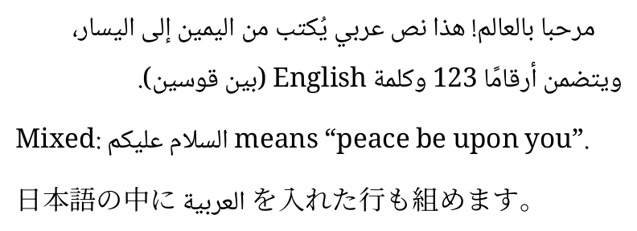

This guide takes up the properties of each CSS specification one by one and places side by side the definition from the specification, how Kumiori treats it, an example typeset by Kumiori, and the code of that example. Unsupported properties are also listed by name. This document itself is written in HTML and CSS and typeset by Kumiori.
The XSL-FO items are in a separate document, the "XSL-FO 1.1" edition.
Kumiori (組み織り) is a typesetting engine that produces PDF from HTML and CSS and from XSL-FO. This document takes up the CSS properties in chapters such as pages, boxes, text and lines, vertical writing, tables and multi-column layout, and shows how Kumiori treats each of them with examples it has actually typeset.
1.1How to read this document
Each section heading carries the names of the properties it covers. The line of small type under the heading is the definition of the property. After the ●, the "Initial", "Applies to" and "Inherited" entries of the definition table in the specification are reproduced as retrieved from the W3C specification (in the original English), and the specification the definition comes from is given at the end of the line. The sources and retrieval dates are collected in the "Sources" appendix. For the AH Formatter extensions (-ah-) in Appendix A, instead of quoting a specification, we describe what Kumiori typesets and how, in Kumiori's own words.
In each sample, the typeset example is shown inside a thin frame, and the code is shown below it on a grey background. In the code, the parts in bold on a yellow background are the declarations the section is about. The typeset example and the code are produced from the same source. The same samples are also typeset one by one in Kumiori's tests (test/conformance.test.ts), which confirm that no warnings are produced.
1.2Support status
Supported
The main values of the property are typeset as specified. Rare or new values may be unsupported; this is noted in the "Kumiori" column of the section's value table.
Partial
Even among the main uses, there are values or combinations that are not handled, or layouts that differ from the specification (described in the text of the section).
Unsupported
Ignored. Unsupported properties are listed by name in Chapter 16.
1.3How the status was checked
"Supported", "Partial" and "Unsupported" were determined as follows. A document that specifies the property and one that does not are both loaded into Kumiori, and the content handed to the typesetting stage (Kumiori's internal logical tree) is compared. If the content does not change when the property is specified, the property has no effect (Unsupported). For the properties that do change the content, the typeset examples in this document were checked by eye to confirm that they are laid out as specified.
Typesetting is done with the default style sheet of the Kumiori CLI (intended for book typesetting) left unchanged. CSS computed values are determined by Kumiori's own cascade (no browser is used). The fonts are Kumiori's defaults (Noto Serif JP and Noto Sans JP for Japanese, Tinos and Arimo for Latin, Cousine for monospace, and STIX Two Math for mathematics).
Pages
The page size, margins, running heads and page numbers are set by @page rules. Because @page rules apply to the whole document, this chapter shows parts of the style sheet of this document itself (docs/conformance/html/kumiori-html-css.css) instead of samples.
2.1Page size : sizeSupported
Initial : auto(size — CSS Paged Media 3)
“This property specifies the target size and orientation of the page box’s containing block.”— CSS Paged Media 3 §7.1
Kumiori interprets lengths (width and height), names such as A3, A4, A5, B4, B5, JIS-B4, JIS-B5, letter, legal and ledger, and the orientations portrait and landscape. The following example is the declaration for the pages of this guide (182mm × 257mm, JIS B5).
“The :left and :right pseudo-classes only match left or right pages, respectively.”— CSS Paged Media 3 §4.2.1
The margins and running heads can be changed for the first page of the document (:first), for left and right pages (:left, :right), and for the blank pages produced by forced page breaks (:blank). This document places the page number at the bottom left of left pages and at the bottom right of right pages, and changes the running head accordingly.
Values of :first, :left, :right, :blank of @page(CSS Paged Media 3 §4.2)
Value
Meaning
Kumiori
:first
Applies to the first page of the document.
Supported
:left
Matches left pages (every page is classified as a left or a right page according to the page progression direction).
Supported
:right
Matches right pages.
Supported
:blank
Matches pages with no content that were produced by a forced page break (only the values left, right, recto and verso of break-before and break-after produce such pages).
Supported
2.3Named pages : pageSupported
Initial : autoApplies to : boxes that create class A break pointsInherited : no (but see prose)(page — CSS Paged Media 3)
“The page property is used to specify a particular type of page (called a named page) on which an element must be displayed.”— CSS Paged Media 3 §8.1
The cover is placed on a page named cover (with no margins), the table of contents on a page named front (with page numbers in roman numerals), and each chapter on its own page c1, c2, … (a chapter tab is drawn in the outer margin, moved one step down for each chapter). A page break occurs wherever the name changes.
Uses the value of the nearest ancestor that has a value other than auto. On the root element, the name is empty.
Supported
<custom-ident>
Specifies the type of page (a named page) on which the element is placed. If necessary, a forced page break is inserted and a new page of that type is started.
Supported
2.4Page margin boxesSupported
“Page-margin boxes are boxes within the page margin that, like pseudo-elements, can contain generated content.”— CSS Paged Media 3 §5
The 16 boxes in the margins (from @top-left-corner to @left-bottom) are supported. The width and height of the boxes are determined by the rules of CSS Paged Media 3 §5.3, and the boxes can have borders, backgrounds, rounded corners and padding. The chapter tab in the outer margin is the @right-middle box (@left-middle on left pages) given a background color and rounded corners.
“Counters can be defined and controlled within an @page rule, and used as content in page-margin boxes. This is useful for maintaining a page count.”— CSS Paged Media 3 §6.1
page is the page number and pages is the number of pages in the document. The numbering can be reset with counter-reset and counter-increment in @page. The names of list-style-type (such as lower-roman) can be used as the number format.
@page front { @bottom-right { content: counter(page, lower-roman); } }
Values of counter(page), counter(pages)(CSS Paged Media 3 §6.1)
Value
Meaning
Kumiori
page
A counter that automatically increases by 1 on every page. It can be changed with counter-increment and counter-reset in @page.
Supported
pages
A counter whose value is the total number of pages in the document. Its value cannot be changed.
Supported
2.6Running head text : string-setSupported
Initial : noneApplies to : all elements, but not pseudo-elementsInherited : no(string-set — CSS Generated Content 3)
“The string-set property contains one or more pairs, each consisting of an custom identifier (the name of the named string) followed by a <content-list> describing how to construct the value of the named string.”— CSS GCPM 3 §1.1.1
The text of an element (content(), content(text), content(before), etc.), the value of an attribute (attr()) or a counter (counter()) is turned into a named string, which is output with string() in a margin box. This document makes the text of the chapter headings the string chapter, and the value of the data-no attribute the string chapno.
“position: running(custom-ident) removes the element (and associated ::before and ::after pseudo-elements) from the normal flow, and makes it available to place in a page margin box using element().”— CSS GCPM 3 §1.2.1
An element set to running() is taken out of the body text and placed, with its formatting preserved, with content: element() in a margin box.
Removes the element (and its ::before and ::after) from the normal flow so that it can be placed in a margin box with element(). The element inherits from its original position, but is not displayed there.
Supported
Values of content: element()(CSS GCPM 3 §1.2.2)
Value
Meaning
Kumiori
element(<custom-ident>)
Places an element removed with running() in a margin box.
Supported
first, start, last, first-except
When there are several elements of the same name on a page, selects which one to use, with the same keywords as string().
Supported
2.8Trim marks and bleed : marks, bleedPartial
Initial : none(marks — CSS Paged Media 3)
When marks is set to crop or cross, both the corner trim marks and the center (cross) marks are drawn (crop and cross are not distinguished). bleed sets the width of the bleed. auto for bleed is treated as 0 (in CSS Paged Media 3, it is 6pt when marks includes crop). The --print option of the CLI also produces a PDF with trim marks and bleed.
@page { marks: crop cross;bleed: 3mm; }
Values of marks(CSS Paged Media 3 §7.2)
Value
Meaning
Kumiori
none
Draws neither trim marks nor cross marks.
Supported
crop
Draws crop marks (short lines extending each side of the page box, showing where to trim).
Partial: the cross marks are drawn as well
cross
Draws cross marks (crosses outside the sides, for aligning the sheets).
Partial: the corner trim marks are drawn as well
Values of bleed(CSS Paged Media 3 §7.3)
Value
Meaning
Kumiori
auto
6pt if marks includes crop, otherwise 0.
Partial: always 0
<length>
Specifies how far the bleed area extends beyond the page box on each side. Negative values are allowed.
Initial : noneApplies to : all elementsInherited : no(bookmark-level — CSS Generated Content 3)
An element with bookmark-level becomes a bookmark in the PDF. The text of the bookmark can be changed with bookmark-label (the default is the text of the element). Every default style (--style) gives h1 to h6 bookmark-level 1 to 6 (the same as the example default style sheet in Appendix B of CSS GCPM 3; bookmark-level: none removes them). This document makes the chapter headings level 1 bookmarks and the section headings level 2 bookmarks.
Values of bookmark-level(CSS Generated Content 3 §3.1)
Value
Meaning
Kumiori
none
No bookmark is created.
Supported
<integer [1,∞]>
Specifies the level of the bookmark. The top level is 1 (0 and negative values are invalid).
Supported
Values of bookmark-label(CSS Generated Content 3 §3.2)
Value
Meaning
Kumiori
<content-list>
Builds the text of the bookmark in the same way as string-set (strings, content(), attr(), counter(), etc.).
Supported
2.10Page numbers in the table of contents : target-counter(), leader()Supported
“The target-counter() function retrieves the value of the innermost counter with a given name.”— CSS Generated Content 3 §2.6.1
Each entry of the table of contents points to a heading with the href of an a element, and the content of its ::after outputs a dotted leader and the number of the page the heading is on. target-text() can also retrieve the text of the target. In the PDF, the entries of the table of contents link to their sections.
A table of contents built with flex can also be typeset: the a is display: flex, and its text (the title), a ::before used as the leader (flex: 1 with a dotted bottom border) and an ::after with the page number are placed with order (section 13.1).
a elements become links in the PDF. Not only an a inside a line, but also an a that is a block, a flex container or a table makes its whole box a link. The target of href is decided as follows.
A reference starting with # goes to that id in the document.
A URL with a scheme (the form of RFC 3986 §3.1: a letter followed by letters, digits, +, - or ., ending with :) opens that URL (a URI action in the PDF). By default only the schemes http, https, mailto and tel become links. Other schemes (javascript:, data:, file:, custom schemes and so on) do not become links: the text is typeset as is and a warning is reported. The scheme is read as browsers do, after removing leading and trailing spaces and control characters, and tabs and newlines.
A relative reference (file.pdf, ../doc/a.docx and so on) opens the file relative to the location of the PDF. For another PDF it uses the action that opens another PDF (GoToR; #page=N goes to that page and #name to the named destination), and for other files the action that opens a file (Launch) (ISO 32000-1 §12.6.4). By default only relative PDFs become links; actions that open a file (non-PDF files, absolute paths, scheme-less //host/…) do not.
Which schemes become links, and whether actions that open a file are written, can be chosen with options (links in the API; --link-schemes and --link-launch on the command line).
Values of target-counter()(CSS Generated Content 3 §2.6.1)
Value
Meaning
Kumiori
<url> / <string>
The target (a URL with # that points to a place in the document).
Supported
<custom-ident>
The name of the counter whose value is retrieved at the target (for page, the number of the target's page).
Supported
<counter-style>
The format of the retrieved value (optional).
Partial: this format is ignored when the counter is page
Values of target-text()(CSS Generated Content 3 §2.6.3)
Value
Meaning
Kumiori
content
Retrieves the text of the target element (the default).
Supported
before
Retrieves the text of the target element's ::before.
Supported
after
Retrieves the text of the target element's ::after.
Supported
first-letter
Retrieves the first letter of the target element, including the surrounding punctuation, as for ::first-letter.
Supported
Values of leader()(CSS Generated Content 3 §2.5.1)
Value
Meaning
Kumiori
dotted
Same as leader(".") (a dotted leader).
Supported
solid
Same as leader("_").
Supported
space
Same as leader(" ") (a blank leader).
Supported
<string>
A leader made of the given string. The specification does not yet define this value (“Issue: Define this.” CSS Generated Content 3 §2.5.1).
Supported
Boxes
An element becomes a box with four areas: the content, the padding, the border and the margin.
“Each box has a content area (e.g., text, an image, etc.) and optional surrounding padding, border, and margin areas; the size of each area is specified by properties defined below.”— CSS 2.1 §8.1
3.1Margins : marginSupported
Initial : see individual propertiesApplies to : all elements except elements with table display types other than table-caption, table and inline-tableInherited : no(margin — CSS 2.1 §8)
Adjacent vertical margins collapse (margin collapsing), and the larger one is used. Negative values and auto (auto on the left and right centers the box; when only one side is auto, that margin takes the remaining space) are also supported. When a box has a definite width and neither horizontal margin is auto, it is placed from the left if the direction of the containing block is ltr, and from the right if it is rtl (CSS 2.1 §10.3.3).
Values of margin(CSS 2.1 §8.3)
Value
Meaning
Kumiori
<length>
A margin of a fixed width. Negative values are allowed.
Supported
<percentage>
Sets the margin as a percentage of the width of the containing block.
Supported
auto
The margin is determined by the rules for computing widths and margins (CSS 2.1 §10.3 and others).
Supported
下に 8pt の余白
上に 12pt の余白 (重なって 12pt あく)
左右の auto で中央
3.2Padding : paddingSupported
Initial : see individual propertiesApplies to : all elements except table-row-group, table-header-group, table-footer-group, table-row, table-column-group and table-columnInherited : no(padding — CSS 2.1 §8)
Values of padding(CSS 2.1 §8.4)
Value
Meaning
Kumiori
<length>
Padding of a fixed width (negative values are not allowed).
Supported
<percentage>
Sets the padding as a percentage of the width of the containing block. The top and bottom padding are also percentages of the width.
Supported
上 4pt・左右 16pt・下 10pt の内側の余白
3.3Border styles : border-styleSupported
Initial : (see individual properties)Applies to : all elements except ruby base containers and ruby annotation containersInherited : no(border-style — CSS Backgrounds 3)
All ten styles are drawn: none, hidden, solid, dotted, dashed, double, groove, ridge, inset and outset.
Values of border-style(CSS Backgrounds 3 §3.2)
Value
Meaning
Kumiori
none
No border is drawn. The color and width are ignored, and the width becomes 0.
Supported
hidden
Same as none, but treated differently in the border conflict resolution of tables with collapsed borders (border-collapse: collapse).
Supported
dotted
A series of round dots.
Supported
dashed
A series of square-ended dashes.
Supported
solid
A single solid line.
Supported
double
Two parallel solid lines with a gap between them.
Supported
groove
Looks as if it were carved into the surface.
Supported
ridge
Looks as if it were raised from the surface.
Supported
inset
Makes the content inside the border look sunken. Treated as ridge in tables with collapsed borders.
Supported
outset
Makes the content inside the border look raised. Treated as groove in tables with collapsed borders.
Supported
solid
dotted
dashed
double
groove
ridge
inset
outset
3.4Border width and color : border-width, border-colorSupported
Initial : (see individual properties)Applies to : all elements except ruby base containers and ruby annotation containersInherited : no(border-width — CSS Backgrounds 3)
The width and color can be changed for each side. The widths thin, medium and thick are the values of CSS Backgrounds 3 (1px, 3px and 5px). When the sides have different colors, the corners are split diagonally.
Values of border-width(CSS Backgrounds 3 §3.3)
Value
Meaning
Kumiori
<length [0,∞]>
Specifies the width of the border as a length (negative values are invalid).
Supported
thin
1px wide.
Supported
medium
3px wide.
Supported
thick
5px wide.
Supported
Values of border-color(CSS Backgrounds 3 §3.1)
Value
Meaning
Kumiori
<color>
Specifies the color of the border, with one to four values for the individual sides.
Supported
辺ごとに太さと色を変えた罫線
3.5Width and height : width, heightSupported
Initial : autoApplies to : all elements except non-replaced inlinesInherited : no(width — CSS Sizing 3)
Lengths, percentages (of the width of the containing block) and auto are supported. calc() expressions are also interpreted. aspect-ratio (CSS Sizing 4 §5.1) decides one of width and height from the other when only one is definite; for a block whose height is auto, the height is decided from the actual width at layout time (including the stretched width of a flex item). With overflow visible the box grows to fit more content (the automatic minimum size); a clipping box keeps the height from the ratio. min-height and max-height clamp the height from the ratio, and also act on the width through the ratio when the width is auto (the transferred maximum does not go below min-width, and the transferred minimum does not exceed max-width). A box with a specified min-height (including 0) does not grow with its content. When written with auto on an image, the image's natural aspect ratio is used.
Values of width, height(CSS Sizing 3 §3.1.1)
Value
Meaning
Kumiori
auto
An automatic size. How it is determined depends on the specification of each layout mode.
Supported
<length-percentage [0,∞]>
Specifies the size of the box as a length or a percentage. box-sizing determines whether the content box or the border box is measured.
Supported
min-content
The min-content size in that axis.
Unsupported
max-content
The max-content size in that axis.
Unsupported
fit-content
The size min(max-content, max(min-content, stretch)).
Unsupported
width: 60%
width: calc(100% - 30mm)
高さ 12mm
3.6Minimum and maximum width and height : min-width, max-width, min-height, max-heightSupported
Initial : noneApplies to : all elements that accept width or heightInherited : no(max-width — CSS Sizing 3)
Values of min-width, min-height(CSS Sizing 3 §3.1.2)
Value
Meaning
Kumiori
auto
Determines the minimum size automatically.
Supported
<length-percentage [0,∞]>
Specifies the lower limit of the size of the box as a length or a percentage.
Supported
min-content, max-content, fit-content
Uses a content-based size as the lower limit.
Unsupported
Values of max-width, max-height(CSS Sizing 3 §3.1.3)
Value
Meaning
Kumiori
none
No upper limit on the size.
Supported
<length-percentage [0,∞]>
Specifies the upper limit of the size of the box as a length or a percentage.
Partial: max-height only limits the height of boxes with a specified height; it does not limit an auto height determined by the content
min-content, max-content, fit-content
Uses a content-based size as the upper limit.
Unsupported
The bottom margin of the last child of a box with an auto height goes outside the box and collapses with the box's bottom margin (CSS 2.1 §8.3.1). When min-height takes effect and extends the box, it does not collapse, and that margin is absorbed by the extension (as in browsers). In vertical writing, the minimum and maximum in the block direction (the width) are min-width and max-width.
幅は 40mm を超えない。中身の長いボックスでも、行を折り返して収める。
中身が少なくても高さ 12mm
3.7How width is measured : box-sizingSupported
Initial : content-boxApplies to : all elements that accept width or heightInherited : no(box-sizing — CSS Sizing 3)
With content-box, width is the width of the content; with border-box, it is the width up to and including the border.
Values of box-sizing(CSS Sizing 3 §3.3)
Value
Meaning
Kumiori
content-box
Applies the specified size to the content box (excluding the margins, borders and padding).
Supported
border-box
Applies the specified size to the border box (including the padding and borders, but not the margins).
Supported
box-sizing: content-box
box-sizing: border-box
3.8Rounded corners : border-radiusSupported
Initial : see individual propertiesApplies to : all elements (but see prose)Inherited : no(border-radius — CSS Backgrounds 3)
A different radius for each corner, elliptical corners with different horizontal and vertical radii (separated by /), and percentages are supported. Background colors and background images are also clipped to the rounded corners. For images such as img, the image content is clipped to the rounded corners, and the border, if any, is drawn along them too (the image content is clipped by the inner curve, whose radii are reduced by the border and padding; CSS Backgrounds 3 §5.1, §5.3). The content of a box with overflow: hidden is also clipped by the inner curve.
Values of border-radius(CSS Backgrounds 3 §4.1)
Value
Meaning
Kumiori
<length-percentage [0,∞]>
The horizontal radius of the quarter ellipse that forms the corner. Percentages are relative to the width of the border box.
Supported
/ <length-percentage [0,∞]>
The value after / is the vertical radius. Percentages are relative to the height of the border box. If omitted, it is the same as the horizontal radius.
Supported
8pt
50% / 30%
0 12pt
3.9Shadows : box-shadowSupported
Initial : noneApplies to : all elementsInherited : no(box-shadow — CSS Backgrounds 3)
“The box-shadow property attaches one or more drop shadows to the box.”— CSS Backgrounds 3 §6.1
Offsets, blur, spread distance and color, multiple shadows, and inner shadows (inset; drawn inside the padding box) are supported. Because PDF has no drawing operator for blur, the blur is drawn by stacking semi-transparent shapes that grow (or, for inner shadows, shrink) step by step.
Values of box-shadow(CSS Backgrounds 3 §6.1)
Value
Meaning
Kumiori
none
No shadow.
Supported
first <length>
The horizontal offset of the shadow. Positive values move it to the right.
Supported
second <length>
The vertical offset of the shadow. Positive values move it down.
Supported
third <length [0,∞]>
The blur radius. With 0, the edge of the shadow is sharp.
Supported
fourth <length>
The spread distance. Positive values expand the shadow in all directions; negative values contract it.
Supported
<color>
The color of the shadow. If omitted, currentColor.
Supported
inset
Changes the outer shadow into an inner shadow (one cast inside the box).
Supported
外側の影
内側の影 (inset)
3.10Background color : background-colorSupported
Initial : transparentApplies to : all elementsInherited : no(background-color — CSS Backgrounds 3)
Colors can be given as names, #rgb, rgb(), hsl() and values with alpha; in addition, the print color device-cmyk() is interpreted (and written to the PDF as CMYK).
hwb(), lab(), lch(), oklab(), oklch() and color() (srgb, srgb-linear, display-p3, display-p3-linear, a98-rgb, prophoto-rgb, rec2020, xyz, xyz-d50, xyz-d65) of CSS Color 4 and color-mix() of CSS Color 5 are also interpreted. none components, percentages, hue units (deg, grad, rad, turn) and the alpha after / are read. Kumiori outputs colors in sRGB (DeviceRGB in PDF), so these colors are converted to an sRGB rgb() where they are read (the computed value is not kept in the original color space). Colors outside the sRGB gamut (such as the vivid green of display-p3) are brought into the sRGB gamut by reducing chroma while keeping lightness and hue (Binary Search Gamut Mapping with Local MINDE, CSS Color 4 §14.2). currentcolor inside color-mix() is resolved with the color of the element that declares it (it is not resolved again with the color of elements that inherit the value). calc() inside components and the relative color syntax (lab(from …) and so on) are not interpreted (the declaration is dropped as an unreadable value). The interpolation color space of gradients (linear-gradient(in oklch, …)) is not interpreted either.
Values of background-color(CSS Backgrounds 3 §2.2, CSS Color 4)
Value
Meaning
Kumiori
color names, #hex
Specifies the color by name (such as red) or in hexadecimal such as #rgb or #rrggbb.
Supported
rgb(), rgba()
Specifies the color by its red, green and blue components (and alpha).
Supported
hsl(), hsla()
Specifies the color by hue, saturation and lightness (and alpha).
Supported
transparent
Transparent (the initial value).
Supported
currentColor
The color of the value of the color property.
Supported
hwb(), lab(), lch(), oklab(), oklch(), color()
The other color syntaxes of CSS Color 4. color() specifies a color by the name of a color space (srgb, display-p3, rec2020, xyz and so on) and its components.
Supported (converted to sRGB)
color-mix()
The color obtained by mixing two or more colors in the given color space in the given proportions (CSS Color 5 §3).
Initial : noneApplies to : all elementsInherited : no(background-image — CSS Backgrounds 3)
Only the first background image is drawn (the second and later of multiple background images are not drawn). The size may be a length, a percentage, cover or contain; the position may be keywords, lengths or percentages (including the three- and four-value syntax); for repetition, repeat, repeat-x, repeat-y and no-repeat are supported. background-clip, background-origin and background-attachment are not interpreted.
Values of background-image(CSS Backgrounds 3 §2.3)
Value
Meaning
Kumiori
none
No background image.
Supported
url()
Uses an image file as the background image.
Supported
gradients (linear-gradient() etc.)
Uses a gradient as the background image.
Supported
multiple layers (separated by commas)
Stacks several background images.
Partial: only the first is drawn
Values of background-size(CSS Backgrounds 3 §2.9)
Value
Meaning
Kumiori
contain
Keeping the aspect ratio, scales the image to the largest size at which both its width and height fit within the background positioning area.
Supported
cover
Keeping the aspect ratio, scales the image to the smallest size at which both its width and height cover the background positioning area.
Supported
<length-percentage [0,∞]>, auto
The first value is the width of the image and the second its height. With one value only, the second is auto.
Supported
Values of background-position(CSS Backgrounds 3 §2.6)
Value
Meaning
Kumiori
<percentage>
A horizontal percentage is relative to (width of the background positioning area − width of the image). Likewise vertically.
Supported
<length>
An offset of a fixed length.
Supported
top, bottom
With one or two values, 0% or 100% vertically. With three or four values, the edge from which the following offset is measured.
Supported
left, right
With one or two values, 0% or 100% horizontally. With three or four values, the edge from which the following offset is measured.
Supported
center
50% in the axis that has no other value.
Supported
Values of background-repeat(CSS Backgrounds 3 §2.4)
Value
Meaning
Kumiori
repeat
Repeats in that direction until the background positioning area is covered.
Supported
repeat-x
Same as repeat no-repeat (repeats horizontally only).
Supported
repeat-y
Same as no-repeat repeat (repeats vertically only).
Supported
no-repeat
Placed once, without repetition.
Supported
space
Repeats as many times as fit without clipping, and spreads the copies out with space between them.
Unsupported
round
Repeats as many times as fit, resizing the image so that the copies fit exactly.
“A gradient is an image that smoothly fades from one color to another.”— CSS Images 3 §3
linear-gradient and radial-gradient, and the repeating variants repeating-linear-gradient and repeating-radial-gradient, are drawn as background images. Once the size of the box is known, the gradient is turned into an SVG gradient and drawn in the PDF as a vector shading. Colors are interpolated as premultiplied values, so a gradient to transparent does not turn grey in the middle. Gradients can also be used as the background of @page.
Values of linear-gradient(), repeating-linear-gradient()(CSS Images 3 §3.1.1)
Value
Meaning
Kumiori
<angle>
The direction of the gradient line. 0deg points up, and positive angles go clockwise (90deg points right).
Supported
to top, to right, to bottom, to left
Sets the direction of the gradient line to 0deg, 90deg, 180deg and 270deg respectively.
Supported
to <corner> (to top right etc.)
Points the gradient line toward the given corner.
Supported
color stops (<color> <length-percentage>?)
Places the colors along the line.
Supported
Values of radial-gradient(), repeating-radial-gradient()(CSS Images 3 §3.2.1)
Value
Meaning
Kumiori
<position> (at …)
Sets the center of the gradient.
Supported
circle, ellipse
Whether the ending shape is a circle or an ellipse.
Supported
closest-side, farthest-side
Sizes the ending shape so that it touches the side closest to (farthest from) the center.
Supported
closest-corner, farthest-corner
Sizes the ending shape so that it passes through the corner closest to (farthest from) the center. When omitted, farthest-corner is used.
Supported
<length [0,∞]>
Specifies the radius of the circle as a length.
Supported
<length-percentage [0,∞]>{2}
Specifies the horizontal and vertical radii of the ellipse.
hidden (and clip) clip the overflowing content at the inside of the box. Boxes with hidden, auto or scroll establish a new block formatting context (they are not affected by floats). clip does not establish a formatting context (CSS Overflow 3 §3.1).
Values of overflow(CSS Overflow 3 §3.1)
Value
Meaning
Kumiori
visible
Overflow is not treated specially; content outside the box is drawn as it is.
Supported
hidden
Clips the content to the padding box and provides no scrolling mechanism.
Supported
clip
Clips the content at the overflow clip edge and provides no scrolling mechanism.
Supported
scroll
Clips the content to the padding box and lets it be scrolled into view.
Partial: clipped in the same way as hidden (no scrolling)
auto
scroll if there is overflowing content, otherwise the same as hidden.
Initial : inlineApplies to : all elementsInherited : no(display — CSS Display 3)
block, inline, inline-block, list-item, none, flow-root, table and its relatives (table-row, table-cell, etc.), flex, inline-flex, grid, inline-grid, ruby and its relatives, and contents are supported. run-in is not interpreted. visibility (CSS 2.1 §11.2) hidden and collapse keep the space but do not paint the text, background, borders or images (visibility is inherited, so visible elements inside are painted). collapse on a flex item removes it from the main axis and keeps its cross size as a strut (the strut is the cross size of the line the item was in before it was collapsed, including the extra height from baseline alignment, so the line height does not change; its content, including visible descendants, is not painted and makes no bookmarks, but ids inside can still be used as link destinations. CSS Flexbox 1 §4.4 and §9.4). collapse on a grid item is the same as hidden. collapse on a table row removes the row.
Initial : noneApplies to : all, but see 9.7Inherited : no(float — CSS 2.1 §9)
“A float is a box that is shifted to the left or right on the current line.”— CSS 2.1 §9.5
Left and right floats are placed by the rules of CSS 2.1 §9.5.1, and the lines that follow flow around them. Floats are painted in front of the backgrounds of the blocks that follow in the flow, and behind the glyphs of the lines (§9.5, §9.9.1). When no width is specified, the width is fitted to the content (shrink-to-fit). GCPM's float: footnote (section 14.3) is also supported.
Values of float(CSS 2.1 §9.5.1, CSS GCPM 3 §2.3)
Value
Meaning
Kumiori
left
Generates a block box that floats to the left. Content flows along its right side.
Supported
right
Generates a block box that floats to the right. Content flows along its left side.
Supported
none
The box does not float.
Supported
footnote
Places the element in the footnote area of the page (GCPM 3).
Places no constraint on the box's position with respect to floats.
Supported
left
Puts the top border edge of the box below the bottom edge of any preceding left float.
Supported
right
Puts the top border edge of the box below the bottom edge of any preceding right float.
Supported
both
Puts the top border edge of the box below any preceding float, left or right.
Supported
回り込む段落。
clear: left の段落は、左の回り込みの下から始まる。
4.3Positioning : positionPartial
Initial : staticApplies to : all elements except table-column-group and table-columnInherited : no(position — CSS Position 3)
absolute and fixed take the element out of the normal flow and place it at the position given by top, right, bottom and left. fixed places it at the same position on every page. The reference for an absolute position (the containing block) is the padding box of the nearest ancestor whose position is not static (CSS 2.1 §10.1). If there is no such ancestor, it is the body region of the page. When top and bottom are both auto, the box is placed at the height it would have had in the normal flow (the static position). When the reference box spans pages, top is measured from the first fragment and bottom from the last. When the reference ancestor, or an element between it and the positioned element, is a table, flex, grid, float, multi-column or vertical-writing box or an inline element, the body region is used as the reference instead of the ancestor's box. However, an element that specifies only a horizontal position and no vertical one is placed as a float to that side and brought as close as possible to the specified position. An absolutely positioned box with no width is given a width fitted to its content (shrink-to-fit; CSS 2.1 §10.3.7).
relative only offsets the typeset box by top and left (or, when those are not given, by the reverse of bottom and right), without changing the positions of the boxes before and after it (CSS 2.1 §9.4.3). Absolutely positioned boxes inside it move with it. Only block boxes are offset; elements within a line are not. sticky serves as a positioning reference but does not offset the box.
Values of position(CSS Position 3 §2)
Value
Meaning
Kumiori
static
A box that is not positioned. It is laid out by the rules of the parent's formatting context, and top and the like have no effect.
Supported
relative
The box is laid out as for static and then offset from that position. The offset does not change the positions of other boxes.
Supported
sticky
Same as relative, but the offset is adjusted automatically with respect to the nearest scroll container.
Partial: the box is not offset; it only serves as the reference for absolutely positioned boxes inside it
absolute
The box is taken out of the normal flow and does not affect the size or position of its siblings or ancestors. Its position is determined with respect to its containing block.
Supported
fixed
Same as absolute, but the position and size are determined with respect to a fixed containing block (in paged media, the page area).
Initial : depends on user agentApplies to : all elements and textInherited : yes(font-family — CSS Fonts 4)
For each character (for combining sequences and emoji sequences, the whole sequence), the font names are tried in order from the first, and the first font that has the character is used (CSS Fonts 4 §5.2, §5.3). The same holds for spaces and digits: a character that an earlier font has is never typeset with a later font. Names of fonts that are not loaded are skipped. The generic names (serif, sans-serif, monospace) are mapped, at their position in the list, to Kumiori's default font pairs (Noto Serif JP and Noto Sans JP for Japanese; Tinos, Arimo and Cousine for Latin). The names of the default fonts (Noto Serif JP, Noto Sans JP) are also looked up at their position, as the same pairs as the generic names. The names of Latin fonts (Tinos, Arimo, Cousine, and the metric-compatible Times New Roman, Arial, Helvetica, Courier New, etc.), when listed together with a loaded font, are mapped at their position to the default Latin fonts. Characters that no font in the list has are looked up in the default fonts and then in loaded fonts that are not in the list (such as fonts added with --font or fonts). Fonts loaded with @font-face (including unicode-range and weight ranges) can also be used. Font files can be TTF, OTF, WOFF or WOFF2. WOFF and WOFF2 are turned back into ordinary font files (TTF, OTF) before use and embedded in the PDF (the table transforms of WOFF 1.0 §5 and WOFF2 §5 are undone). A WOFF2 font collection (WOFF2 §4.2) is turned back into a TTC. When @font-face points to a font collection (a TTC or a WOFF2 font collection), the first font is used.
Values of font-family(CSS Fonts 4 §2.1)
Value
Meaning
Kumiori
<font-family-name>
The name of a font family (a font installed on the system, or a web font).
A generic family name. It acts as an alias for one or more fonts installed on the system.
Partial: serif, sans-serif and monospace are mapped to the default fonts. Other generic family names (cursive, fantasy, system-ui, etc.) are not distinguished
明朝体と欧文のセリフ体 (serif) — Kumiori
ゴシック体とサンセリフ体 (sans-serif) — Kumiori
等幅 (monospace) — if (a < b) return;
5.2Font size : font-sizeSupported
Initial : mediumApplies to : all elements and textInherited : yes(font-size — CSS Fonts 4)
Lengths, percentages, em, the keywords xx-small through xx-large, and larger and smaller are supported.
Values of font-size(CSS Fonts 4 §2.5)
Value
Meaning
Kumiori
<absolute-size> (xx-small–xxx-large, medium etc.)
Refers to an entry in a table of font sizes kept by the formatter.
Supported
<relative-size> (larger, smaller)
Makes the font larger or smaller, based on the font size (computed value) of the parent element.
Supported
<length-percentage [0,∞]>
A length sets the character size directly. A percentage is relative to the font size of the parent element.
Supported
math
Determines the computed font size by the scaling rules for mathematical formulas.
Unsupported
7pt の字・150% の字・x-large の字
5.3Weight and italics : font-weight, font-styleSupported
Initial : normalApplies to : all elements and textInherited : yes(font-weight — CSS Fonts 4)
When a font has no italic face, italics are produced by slanting the glyphs. Bold for a font that has no bold face is produced by thickening the glyph outlines. Bold Japanese characters in a Mincho font are typeset in a Gothic font that has a bold face (Noto Sans JP).
Values of font-weight(CSS Fonts 4 §2.2)
Value
Meaning
Kumiori
<number [1,1000]>
Specifies the weight as a number. A larger number gives the same or a heavier weight.
Supported
normal
Same as 400.
Supported
bold
Same as 700.
Supported
bolder
A weight heavier than the inherited weight.
Supported
lighter
A weight lighter than the inherited weight.
Supported
Values of font-style(CSS Fonts 4 §2.4)
Value
Meaning
Kumiori
normal
Selects a normal face, neither italic nor oblique.
Supported
italic
Matches an italic face. If there is none, matches an oblique face.
Supported
left, right
Matches an italic or oblique face with a positive (clockwise) or negative (counter-clockwise) slant.
Unsupported
oblique <angle [-90deg,90deg]>?
Matches an oblique face. A positive angle is a clockwise slant.
Partial: the angle is ignored and the value is treated the same as italic
Initial : normalApplies to : all elements and textInherited : yes(font-variant-numeric — CSS Fonts 4)
small-caps (when the font has no small capitals, they are synthesized by shrinking capitals), numeral forms (oldstyle-nums, tabular-nums, slashed-zero, etc.) and ligatures (common, discretionary, contextual) are supported. The super and sub values of font-variant-position are used only when the font has superscript and subscript glyphs (OpenType sups and subs); when it does not, they are not synthesized (font-synthesis-position is not interpreted). Because glyphs are looked up one character at a time, substitutions that depend on a sequence of characters (fractions with diagonal-fractions, ordinals with ordinal, context-dependent ligatures with contextual) take effect only where the font substitutes a single character. font-variant-alternates and font-variant-emoji are not interpreted.
font-variant-east-asian selects the glyph variant of East Asian characters (jis78, jis83, jis90, jis04, simplified, traditional), their width (full-width, proportional-width) and ruby glyphs (ruby) through the corresponding OpenType features. Values written in the font-variant shorthand are treated the same way. When the font does not have the feature, the text is unchanged (glyphs are not synthesized). In vertical writing the features are not applied, as with the other font-variant-* properties. They are not applied to ruby annotation text (rt) either (the UA default font-variant-east-asian: ruby has no effect on annotation text).
A variation selector (U+FE00 to U+FE0F, U+E0100 to U+E01EF) is typeset as one character together with the character before it, and the glyph of the variation sequence is taken from the font (cmap Format 14 of OpenType; IVS and SVS, such as 葛 followed by U+E0100). If the font does not have the sequence, the glyph of the base character is used. Line-breaking rules, letter spacing and the orientation in vertical writing follow the base character.
A base character followed by combining marks (e with U+0301, か with the combining voiced sound mark U+3099, and so on) and emoji sequences (skin-tone modifiers, ZWJ sequences, flags, keycaps) are also set as one character (an extended grapheme cluster of UAX #29). A sequence whose base is a Latin, Greek or Cyrillic letter is set with the precomposed character (NFC) when the font has it (Vietnamese and polytonic Greek written in decomposed form get the same glyph and width as the precomposed form; CSS Fonts 4 §5.3). Other sequences are passed whole to a single font, so the font's mark positioning (GPOS) and glyph substitution (GSUB) apply. No line break, letter-spacing or justification space is inserted inside a sequence. If no font has the sequence, it is replaced by the precomposed character (NFC) where there is one, and otherwise set with the glyph of each character.
Thai, languages written in Devanagari (Hindi and others) and Korean (Hangul) can be typeset. The default fonts do not have these characters, so specify a font that has them (Noto Sans Thai, Noto Sans Devanagari, Noto Sans KR and so on) with @font-face, --font of the Node command, or fonts of the API. Devanagari is set with the glyphs produced by the font's shaping (conjuncts, reph, pre-base vowel signs, nukta, and switching forms with ZWJ and ZWNJ). For Thai, vowels and tone marks above and below are stacked with the font's positioning, and the ring of SARA AM (U+0E33) is reordered below the tone mark. For Hangul, besides syllable characters, a sequence of conjoining jamo (U+1100 and up) is set as one character with the glyph the font composes. Thai, which has no spaces between words, wraps at the word boundaries found with the dictionary of Intl.Segmenter of the runtime (SA of UAX #14, CSS Text 3 §5). Word boundaries can differ between runtimes (ICU versions), and where Intl.Segmenter is missing, lines do not wrap at word boundaries. Korean wraps between syllables with word-break: normal and only at spaces with keep-all (CSS Text 3 §5.1). The space between Hangul words takes the width the font chooses by context (OpenType calt). No text-autospace spacing is inserted between Hangul and Latin letters or digits (CSS Text 4 §8.4.1). In PDF, characters whose glyphs do not correspond one to one to their characters carry the original characters (ActualText), so text can be extracted.
Limitations: glyphs are obtained from the font one character (grapheme cluster) at a time, so font processing across characters does not apply, apart from pair kerning of Latin and Thai letters, Latin ligatures and the space between Hangul (for example, the Thai ligature of U+0E24 and U+0E45). No dotted circle (U+25CC) is supplied for invalid sequences (a mark without a base, a vowel sign after an independent vowel). Justification stretches only spaces in Thai and Devanagari (a Thai line without spaces is not stretched). In vertical writing, Thai and Devanagari are set sideways and Hangul upright. Lao, Khmer, Burmese and Indic scripts other than Devanagari (Bengali, Tamil and so on) have not been verified.
Arabic script (Arabic, Persian) and Hebrew script can be typeset from right to left. The default fonts do not have Arabic letters, so specify a font that has them (Noto Sans Arabic, Noto Naskh Arabic and so on) with @font-face, --font of the Node command, or fonts of the API. Hebrew can also be typeset with the default Latin fonts (Tinos, Arimo), including text with vowel points (niqqud) and cantillation marks (a font such as Noto Sans Hebrew or Noto Serif Hebrew can be specified as well). The order of characters is decided by the Unicode Bidirectional Algorithm (UAX #9; reordering is done per line) and follows the dir attribute (direction and unicode-bidi in the HTML UA style sheet), direction, unicode-bidi, bdi, bdo and dir="auto". The start side of a paragraph (start and end of text-align, text-indent, logical properties such as margin-inline-start), the side of list numbers and markers, and the column order of a table with dir="rtl" also run from right to left. Arabic words (separated by spaces) are passed whole to the font, which selects initial, medial, final and isolated forms and the required ligatures (such as lam-alef). Joining is kept across inline boundaries that only change the color (CSS Text 3 §7.3). Arabic combining marks such as vowel signs are stacked in the order of Unicode UTR #53 (a vowel sign above a shadda), and Hebrew points are passed to the font with the dagesh and the shin and sin dots before the vowel points (fonts that have glyphs combining a consonant with a dagesh or shin dot then use them; the same order as HarfBuzz). In both cases the reordering applies only to what is passed to the font; text extracted from the PDF keeps the original order. The zero-width non-joiner (U+200C, used in Persian) does not split a word; it makes the neighboring letters take their non-joining forms. Invisible control characters such as LRM and RLM have no width. Justification widens only the spaces between words, and letter-spacing is not inserted inside Arabic words (CSS Text 3 §6.4.4 and §7.2.1; it is inserted between Hebrew letters). In vertical writing both scripts are set sideways and run from the bottom of the line to the top. Arabic is joined as a sideways word, and with text-orientation: upright each letter is set in its isolated form (CSS Writing Modes 3 §5.1.1). In the PDF each word (for Hebrew, each letter with vowel points) carries its characters as ActualText, so text can be extracted in reading order (checked with poppler; the characters are written in the order placed on the page, left to right).
Limitations: no line break is made inside an Arabic word (even with word-break: break-all or overflow-wrap: anywhere the word moves to the next line as a whole, and a word longer than the line overflows). The order of letters inside an Arabic word does not change with unicode-bidi: bidi-override (only the position of the word changes). Justification by elongation (kashida) is not done. When a right-to-left title, Latin text, a leader and a number follow one another, as in a table-of-contents line, the number is placed next to the Latin text as UAX #9 specifies (wrapping the title in bdi or fo:bidi-override avoids this). Other right-to-left scripts such as Syriac, Thaana and N'Ko have not been checked.
Vietnamese, Greek (including polytonic) and languages written in Cyrillic such as Russian and Ukrainian can be typeset with the default Latin fonts (Tinos, Arimo), including bold, italic and pair kerning. Vietnamese letters (Latin Extended Additional) are set in the same Latin font as the rest of the word and take part in the spacing between Japanese and Latin text. In a Japanese document (with a generic or default font, which is a pair of a Japanese font and a Latin font), a word of two or more Greek or Cyrillic letters is set in the Latin font like a Latin word, and the Japanese-Latin spacing is inserted between it and Japanese characters (a word joined by a hyphen or apostrophe is one word; Latin letters, digits, Japanese characters and spaces end a word). A single letter (such as a Greek letter used as a unit or symbol) is set in the Japanese font when that font has it, without the spacing. Words are found within one text string, so a word that crosses an inline element boundary is cut at the boundary. With the Antenna House compatibility setting (--style ah), words also stay in the Japanese font. Hyphenation (hyphens: auto) is done for text whose language is ru (Russian), uk (Ukrainian) or el (Modern Greek, monotonic spelling). Vietnamese, polytonic Greek (el-polyton) and Ancient Greek (grc) are not hyphenated.
A ligature turns a sequence of characters listed in the font's ligature table (Ligature Substitution of the OpenType GSUB) into one glyph. Neither the length of the sequence nor the kind of character is limited, so fonts that replace words with icons (home, arrow_back, 3d_rotation and so on in Material Icons) show the icon when its name is written. Common ligatures (liga, clig) are used by default; discretionary ligatures (dlig) and historical ligatures (hlig) are used when discretionary-ligatures or historical-ligatures of font-variant-ligatures, or font-feature-settings, asks for them. No line break, letter-spacing or justification space is inserted inside a ligature. Text extracted from the PDF is the original word (for a font that gives two or more names to one glyph, the name that appeared first in the document).
When letter-spacing is not zero, ligatures are not formed (CSS Text 3 §7.2), even when font-variant-ligatures asks for them (common-ligatures and so on). Ligatures enabled explicitly with font-feature-settings ("liga" 1 and so on) are still used with letter-spacing, and the spacing is added after the ligature (CSS Fonts 4 §7.2). Required ligatures (rlig) are used even with font-variant-ligatures: none and with letter-spacing (CSS Fonts 4 §6.4). Limitations: in vertical writing (including tate-chu-yoko), ligatures from the font's ligature table are not formed. Sequences that span a space are not made into ligatures. Ligatures that a font builds by contextual substitution (Contextual and Chained Contexts Substitution of GSUB) work only for sequences of two to four Latin letters that become one glyph.
Values of font-variant-caps(CSS Fonts 4 §6.6)
Value
Meaning
Kumiori
normal
Uses none of the following features.
Supported
small-caps
Uses small capitals (OpenType smcp).
Supported
all-small-caps
Turns both capitals and lowercase letters into small capitals (c2sc, smcp).
Supported
petite-caps, all-petite-caps
Uses even smaller capitals (pcap, c2pc).
Unsupported
unicase
Turns capitals into small capitals and leaves lowercase letters as they are (unic).
Unsupported
titling-caps
Uses titling capitals (titl).
Unsupported
Values of font-variant-numeric(CSS Fonts 4 §6.7)
Value
Meaning
Kumiori
normal
Uses none of the following features.
Supported
lining-nums, oldstyle-nums
Uses lining numerals (lnum) or oldstyle numerals (onum).
Supported
proportional-nums, tabular-nums
Uses proportional numerals (pnum) or tabular numerals (tnum).
Supported
diagonal-fractions, stacked-fractions
Uses diagonal fractions (frac) or stacked fractions (afrc).
Supported
ordinal
Uses the glyphs for ordinals (ordn).
Supported
slashed-zero
Uses a slashed zero (zero).
Supported
Values of font-variant-ligatures(CSS Fonts 4 §6.4)
Value
Meaning
Kumiori
normal
Uses the default features (common ligatures and so on).
Supported
none
Disables all the ligatures and contextual forms this property controls.
Partial: only common ligatures are disabled
common-ligatures, no-common-ligatures
Enables or disables common ligatures (liga, clig).
Enables or disables discretionary ligatures (dlig).
Partial: only enabling is read (no-discretionary-ligatures is the same as the default)
historical-ligatures, no-historical-ligatures
Enables or disables historical ligatures (hlig).
Partial: only enabling is read (no-historical-ligatures is the same as the default)
contextual, no-contextual
Enables or disables contextual alternates (calt).
Partial: only contextual is read (it takes effect only where the font substitutes a single glyph)
Values of font-variant-east-asian(CSS Fonts 4 §6.10)
Value
Meaning
Kumiori
normal
Uses none of the features below.
Supported
jis78, jis83, jis90, jis04
Uses the glyph forms of the 1978, 1983, 1990 and 2004 editions of JIS (jp78, jp83, jp90, jp04).
Supported
simplified, traditional
Uses simplified or traditional forms (smpl, trad).
Supported
full-width, proportional-width
Uses full-width variants (fwid) or proportionally spaced variants (pwid).
Supported
ruby
Uses ruby variant glyphs (ruby). The font size is not changed.
Partial: not applied to ruby annotation text (rt)
Small Capitals・合字あり office・合字なし office
5.5OpenType features : font-feature-settings, font-kerningSupported
Initial : normalApplies to : all elements and textInherited : yes(font-feature-settings — CSS Fonts 4)
Specifies the font's OpenType features (GSUB, GPOS) by name. The example below uses palt (proportional widths), which compresses Japanese punctuation. font-kerning: none turns kerning off.
Values of font-feature-settings(CSS Fonts 4 §6.12)
Value
Meaning
Kumiori
normal
Does not change glyph selection.
Supported
<feature-tag-value> ("palt" etc.)
Specifies an OpenType feature by its four-character tag, and whether to use it with on, off or a number.
Partial: enabling (on, or 1 and above) is supported. Only liga and kern can be turned off with off or 0
Values of font-kerning(CSS Fonts 4 §6.3)
Value
Meaning
Kumiori
auto
The formatter decides whether to apply kerning to proportional glyphs.
Supported
normal
Applies kerning to proportional glyphs.
Supported
none
Does not apply kerning.
Supported
「括弧」と、句読点。（既定）
「括弧」と、句読点。（palt）
Characters and Lines
6.1Line height : line-heightSupported
Initial : normalApplies to : non-replaced inline boxes and SVG text content elementsInherited : yes(line-height — CSS Inline 3)
Numbers, lengths, percentages and normal are supported. The line height is determined by the rules of CSS 2.1 §10.8 (including the strut).
Values of line-height(CSS Inline 3 §5.1)
Value
Meaning
Kumiori
normal
Determines the line height automatically from the font's metrics.
Supported
<number [0,∞]>
The line height is the element's font size (computed value) multiplied by this number.
Supported
<length [0,∞]>
The specified length is used as the line height.
Supported
<percentage [0,∞]>
The line height is this percentage of the element's font size (computed value).
Initial : startApplies to : block containersInherited : yes(text-align — CSS Text 3)
“This shorthand property sets the text-align-all and text-align-last properties and describes how the inline-level content of a block is aligned along the inline axis if the content does not completely fill the line box.”— CSS Text 3 §6.1
start, end, left, right, center and justify are supported. Justification of Japanese text follows the line adjustment of JLREQ (§3.8): the spacing of punctuation is compressed first, and if that is not enough, the spacing between characters is widened.
Values of text-align(CSS Text 3 §6.1)
Value
Meaning
Kumiori
start
Aligns to the start edge of the line box.
Supported
end
Aligns to the end edge of the line box.
Supported
left
Aligns to the line-left edge of the line box.
Supported
right
Aligns to the line-right edge of the line box.
Supported
center
Centers within the line box.
Supported
justify
Justifies the text by the method of text-justify so that it exactly fills the line box.
Supported
justify-all
Sets text-align-all and text-align-last to justify, so that the last line is justified too.
Unsupported
match-parent
Same as inherit, except that an inherited start or end is treated as left or right according to the parent's direction.
Supported
Values of text-align-last(CSS Text 3 §6.3)
Value
Meaning
Kumiori
auto
Aligns the last line according to text-align-all. If text-align-all is justify, aligns it to start.
Supported
start, end, left, right, center, justify
Aligns the last line (and lines before a forced break) in the respective direction.
Supported
match-parent
Uses the parent's value, reinterpreted according to the parent's direction.
Initial : autoApplies to : textInherited : yes(line-break — CSS Text 3)
Line break positions are determined by UAX #14 and the line-breaking rules (kinsoku) of JLREQ (§3.1.7–§3.1.10). line-break changes the strictness of those rules (strict, normal, loose, anywhere). In the example below, strict on the left does not place the small kana 「っ」 at the start of a line, while loose on the right does. word-break changes breaking within words (break-all, keep-all), and overflow-wrap changes how words that do not fit on a line are wrapped.
Among the rules of line-break: normal (the initial value auto is treated the same) and loose, those that apply only to Japanese and Chinese (a break is allowed before 「〜」 and 「゠」 with normal and loose; before centred punctuation such as 「・：；！？」, before full-width postfixes and after prefixes with loose; CSS Text 3 §5.2) apply to text whose language (lang) is ja or zh. The language is that of the nearest ancestor with a lang attribute (including the lang of html). In Chinese, no break is made inside a two-em dash 「——」 or an ellipsis 「……」, between a number and 「%」 or 「￥」, or before an interpunct 「·」 (UAX #14). A two-em dash can come at the start of a line.
Values of line-break(CSS Text 3 §5.2)
Value
Meaning
Kumiori
auto
The formatter chooses the set of line-breaking restrictions (it may vary them with the line length).
Supported
loose
Breaks lines by the least restrictive rules (used for short lines, as in newspapers).
Supported
normal
Breaks lines by the most common rules.
Supported
strict
Breaks lines by the most stringent rules.
Supported
anywhere
Allows a break around any character, including punctuation and preserved white space.
Supported
Values of word-break(CSS Text 3 §5.1)
Value
Meaning
Kumiori
normal
Words are broken according to the customary rules of their language.
Supported
break-all
In addition to the breaks allowed by normal, a break is allowed between any two characters within a word.
Supported
keep-all
Suppresses the implicit break opportunities between characters within a word.
Supported
break-word
A value kept for compatibility with older content; it has the same effect as specifying word-break: normal and overflow-wrap: anywhere.
Supported
Values of overflow-wrap(CSS Text 3 §5.4)
Value
Meaning
Kumiori
normal
Lines break only at allowed break points.
Supported
anywhere
If a line has no allowed break point, an otherwise unbreakable sequence of characters may be broken at an arbitrary point.
Supported
break-word
Same as anywhere, but the break opportunities this creates are not counted when calculating min-content sizes.
Supported
あいうえおかきくけこっさしすせそ
あいうえおかきくけこっさしすせそ
break-all: internationalization typesetting
6.7Hyphenation : hyphensSupported
Initial : manualApplies to : textInherited : yes(hyphens — CSS Text 3)
“This property controls whether hyphenation is allowed to create more soft wrap opportunities within a line of text.”— CSS Text 3 §5.3
With hyphens: auto, words are broken according to the hyphenation rules of the language given by lang, and a hyphen is added. Kumiori has rules for English (en, en-US, en-GB), Latin (la), Russian (ru), Ukrainian (uk) and Modern Greek (el, monotonic spelling); words in other languages are not broken (CSS Text 3 §5.3). hyphenate-character is not interpreted (the hyphen character cannot be changed).
Values of hyphens(CSS Text 3 §5.3)
Value
Meaning
Kumiori
none
Words are not hyphenated, even where characters within a word indicate hyphenation opportunities.
Partial: lines still break at soft hyphens (U+00AD)
manual
Words are hyphenated only at the hyphenation opportunities explicitly marked by characters within the word (such as soft hyphens).
Supported
auto
Words may also be broken at positions determined automatically from language-appropriate hyphenation resources.
Supported
Typesetting engines must balance typographic considerations such as justification, hyphenation, and internationalization requirements.
6.8Case and full-width forms : text-transformSupported
Initial : noneApplies to : textInherited : yes(text-transform — CSS Text 3)
Values of text-transform(CSS Text 3 §2.1)
Value
Meaning
Kumiori
none
Changes nothing.
Supported
capitalize
Puts the first letter of each word in title case if it is lowercase. Other characters are unchanged.
Supported
uppercase
Puts all characters in uppercase.
Supported
lowercase
Puts all characters in lowercase.
Supported
full-width
Converts all characters to their full-width forms (characters with no full-width form are unchanged).
Supported
full-size-kana
Converts small kana to full-size kana.
Supported
uppercase・capitalize each word・full-width 123
6.9Vertical position within a line : vertical-alignSupported
Initial : baselineApplies to : see individual propertiesInherited : no(vertical-align — CSS Inline 3)
Values of vertical-align(CSS 2.1 §10.8.1 (made a shorthand in CSS Inline 3 §4.2))
Value
Meaning
Kumiori
baseline
Aligns the baseline of the box with the baseline of the parent box.
Supported
sub
Lowers the baseline of the box to the subscript position of the parent box.
Supported
super
Raises the baseline of the box to the superscript position of the parent box.
Supported
<length>
Raises (positive value) or lowers (negative value) the box by this distance.
Supported
<percentage>
Raises or lowers the box by this percentage of the line-height.
Unsupported
middle
Aligns the vertical midpoint of the box with the parent's baseline plus half the parent's x-height.
Partial: only for images and inline-block; has no effect on ordinary inline elements
text-top, text-bottom
Aligns the top (bottom) of the box with the top (bottom) of the parent's content area.
Partial: only for images and inline-block
top, bottom
Aligns the top (bottom) of the aligned subtree with the top (bottom) of the line box.
Partial: only for images and inline-block
x2・H2O・ middle
6.10Spacing between Japanese and Latin text : text-autospacePartial
Initial : normalApplies to : textInherited : yes(text-autospace — CSS Text 4)
Inserts space between Japanese characters and Latin letters or digits (the default in CSS Text 4 is 1/8 ic; Kumiori uses 1/8 of the character size). no-autospace suppresses it. Only whether the value is no-autospace is considered (the individual values such as ideograph-alpha are not distinguished).
Values of text-autospace(CSS Text 4 §8.4)
Value
Meaning
Kumiori
normal
Same as ideograph-alpha ideograph-numeric.
Supported
no-autospace
No automatic spacing is inserted.
Supported
ideograph-alpha
Inserts space between runs of ideographic characters (kanji, kana, etc.) and runs of letters of other scripts (Latin, etc.).
Partial: not distinguished from ideograph-numeric; space is inserted next to digits too
ideograph-numeric
Inserts space between runs of ideographic characters (kanji, kana, etc.) and runs of digits of other scripts.
Partial: not distinguished from ideograph-alpha; space is inserted next to letters too
punctuation
Inserts non-breaking space around punctuation, following the typographic conventions of the language.
Unsupported
insert, replace
Chooses whether to insert space only where there is none (insert), or to insert it even where there is a space (U+0020) and remove the space (replace).
Unsupported
auto
The formatter chooses a set of spacings of high typographic quality.
Initial : normalApplies to : textInherited : yes(text-spacing-trim — CSS Text 4)
Compresses the spacing around brackets and punctuation (half of a full-width character) at the start and end of lines and where they are adjacent (CSS Text 4). space-all does not compress it. trim-start and trim-both set brackets at the start of a line (and, with trim-both, at the end of a line too) to half width. space-first, trim-all and auto are treated the same as normal.
Whether the full stops and commas (、。，．) and the colons (：；) are treated as closing punctuation (the half-width space after them is compressed) or as middle dots (a quarter on each side is compressed) is decided from where the font draws the glyph in the character frame (CSS Text 4 §8.5.3). Glyphs in the first half of the frame (full stops and commas in Japanese and Simplified Chinese fonts, colons in Simplified Chinese fonts) are closing punctuation; glyphs in the centre of the frame (full stops and commas in Traditional Chinese fonts, colons in Japanese and Traditional Chinese fonts) are middle dots. Glyphs that are neither (such as the vertical colons of Simplified Chinese fonts) are not compressed. Full stops and commas of Traditional Chinese fonts are not compressed when a bracket follows, as in 「。」」 and 「，」」, so the characters do not overlap. This was checked with Noto Sans SC, Noto Sans TC, Noto Serif SC and Noto Serif TC.
Values of text-spacing-trim(CSS Text 4 §8.5)
Value
Meaning
Kumiori
space-all
Typesets all full-width punctuation with its full-width glyphs (which include the spacing).
Supported
normal
Opening brackets at the start of a line are kept full width. Closing brackets at the end of a line are set half width if they would not otherwise fit on the line before justification. Where punctuation characters are adjacent, the spacing between them is compressed.
Supported
trim-start
Opening brackets at the start of a line are set half width. Otherwise the same as normal.
Supported
trim-both
Both opening brackets at the start of a line and closing brackets at the end of a line are set half width.
Supported
space-first
Opening brackets at the start of the first line of a paragraph and of lines after a forced break are kept full width. Otherwise the same as normal.
Partial: treated the same as normal
trim-all
Opening and closing brackets and middle dots are set half width regardless of position.
Partial: treated the same as normal
auto
The formatter chooses a set of spacings of high typographic quality.
Initial : noneApplies to : textInherited : yes(hanging-punctuation — CSS Text 3)
allow-end and force-end hang punctuation at the end of a line outside the line (allow-end is treated the same as force-end). first pushes an opening bracket at the start of a line outside the line. last is not interpreted. The example below uses paragraphs exactly 15 characters wide; the rule on the right marks the end of the line. The left has no hanging (none); the right uses allow-end, so the comma and the full stop that come after the 15th character hang outside the line.
Values of hanging-punctuation(CSS Text 3 §8.2.1)
Value
Meaning
Kumiori
none
No punctuation hangs.
Supported
first
An opening bracket, quotation mark or ideographic space at the start of the first line of the element hangs.
Supported
last
A closing bracket or quotation mark at the end of the last line of the element hangs.
Unsupported
force-end
A full stop or comma at the end of a line hangs.
Supported
allow-end
A full stop or comma at the end of a line hangs conditionally.
Partial: treated the same as force-end
行の終わりに句読点がくるときは、ぶら下げると、行末がそろいます。
行の終わりに句読点がくるときは、ぶら下げると、行末がそろいます。
Text Decoration
7.1Lines : text-decoration-linePartial
Initial : noneApplies to : all elementsInherited : no (but see prose)(text-decoration-line — CSS Text Decoration 3)
Draws underline, overline and line-through lines in the text-decoration-color of the element that specifies the line (by default, that element's color). The color of the line does not change even where descendant text has a different color. The text-decoration shorthand accepts the line, line style, color and thickness (omitted values are reset to their initial values).
The line style (text-decoration-style), thickness (text-decoration-thickness) and underline offset (text-underline-offset) of the element that specifies the line are used for the lines originating from that element. Different values on descendant elements do not change the lines of an ancestor. When a thickness is specified, underlines and overlines grow away from the text while the edge nearer the text stays in place (a line-through keeps its center). A length or percentage for text-underline-offset is the distance from the alphabetic baseline to the edge of the underline nearer the text (in vertical writing the reference is the alphabetic baseline, which lies on the underline side of the center of the character frame). Dotted and dashed lines restart their pattern at each change of font or font size (each break between runs of characters in a line). The underline position (text-underline-position) and the property that interrupts lines where they cross glyphs (text-decoration-skip-ink) are not interpreted.
Values of text-decoration-line(CSS Text Decoration 3 §2.1)
Value
Meaning
Kumiori
none
Produces no decoration line (and cancels none).
Supported
underline
Each line of text is underlined.
Supported
overline
Each line of text has a line above it (on the side opposite the underline).
Supported
line-through
Each line of text has a line through its middle.
Supported
blink
The text blinks (not blinking also conforms to the specification).
Unsupported
Values of text-decoration-style(CSS Text Decoration 3 §2.2)
Value
Meaning
Kumiori
solid
Draws a solid line (the initial value).
Supported
double
Draws a double line.
Supported: two lines of the same thickness, separated by a gap equal to the thickness
dotted
Draws a dotted line.
Supported
dashed
Draws a dashed line.
Supported
wavy
Draws a wavy line.
Supported: the wave swings within three times the line thickness, with a period of about six times the thickness
Values of text-decoration-thickness(CSS Text Decoration 4 §2.4)
Value
Meaning
Kumiori
auto
The formatter chooses the thickness (the initial value).
Supported: 6% of the font size (at least 0.5pt)
from-font
Uses the underline thickness given by the font, if it has one; otherwise the same as auto.
Supported
<length>
Specifies the thickness of the line as a length.
Supported
<percentage>
Specifies the thickness of the line as a percentage of 1em.
Supported
Values of text-underline-offset(CSS Text Decoration 4 §2.8)
Value
Meaning
Kumiori
auto
The formatter chooses the position of the underline (the initial value).
Supported
<length>
Moves the underline from its zero position by that length, away from the text (negative values move it toward the text).
Supported: the zero position is the alphabetic baseline (text-underline-position is not interpreted)
<percentage>
Specifies the offset as a percentage of 1em.
Supported
下線・上線・取り消し線・色を変えた下線
7.2Emphasis marks (kenten) : text-emphasis-stylePartial
Initial : noneApplies to : textInherited : yes(text-emphasis-style — CSS Text Decoration 3)
“This property applies emphasis marks to the element’s text.”— CSS Text Decoration 3 §3.1
Places dot, circle, double-circle, triangle and sesame marks (with filled or open), or any single character, as emphasis marks above the characters (to their right in vertical writing). No marks are placed on spaces, punctuation or symbols. The color of the marks is set with text-emphasis-color (initially the color of the text) and their side with text-emphasis-position (over or under in horizontal writing, right or left in vertical writing). The text-emphasis shorthand accepts the shape and the color. The marks are placed where per-character ruby would be, and marks under or to the left of the text take up the same room in the line as ruby. With writing-mode: vertical-lr the marks are placed to the left of the text (the same side as ruby) and cannot be moved to the right.
When no side is specified, emphasis marks in Chinese (elements whose lang starts with zh) are placed below the characters (to their right in vertical writing) (the default style sheet in CSS Text Decoration 3, Appendix B: under right). In Japanese, Korean and elements with no language, they are placed above the characters (to their right in vertical writing).
Values of text-emphasis-style(CSS Text Decoration 3 §3.1)
Value
Meaning
Kumiori
none
No emphasis marks.
Supported
filled
The shape is filled.
Supported
open
The shape is hollow.
Supported
dot
Small circles (filled: U+2022 “•”, open: U+25E6 “◦”).
Supported
circle
Large circles (●, ○).
Supported
double-circle
Double circles (◉, ◎).
Supported
triangle
Triangles (▲, △).
Supported
sesame
Sesame marks (U+FE45 “﹅”, U+FE46 “﹆”).
Supported
<string>
Uses the given string as the emphasis mark (more than one character is not recommended).
Supported
Values of text-emphasis-color(CSS Text Decoration 3 §3.2)
Value
Meaning
Kumiori
<color>
Specifies the color of the emphasis marks. The initial value currentcolor is the same as the color of the text.
Supported
Values of text-emphasis-position(CSS Text Decoration 3 §3.4)
Value
Meaning
Kumiori
over
In horizontal writing, places the marks over the text.
Supported
under
In horizontal writing, places the marks under the text.
Supported
right
In vertical writing, places the marks to the right of the text (also when omitted).
Partial: in vertical-lr the marks are placed to the left of the text (the same side as ruby)
left
In vertical writing, places the marks to the left of the text.
Supported
傍点を付ける・白丸の圏点・字の圏点
Vertical Writing and Writing Direction
8.1Vertical writing : writing-modeSupported
Initial : horizontal-tbApplies to : All elements except table row groups, table column groups, table rows, table columns, ruby base container, ruby annotation containerInherited : yes(writing-mode — CSS Writing Modes 4)
“This property specifies whether lines of text are laid out horizontally or vertically and the direction in which blocks progress.”— CSS Writing Modes 4 §3.2
horizontal-tb, vertical-rl and vertical-lr are supported. In vertical writing, the vertical glyph forms (OpenType vert) are used, and punctuation and brackets take their vertical forms. The size of a vertical-writing box inside horizontal text, and of a horizontal-writing box inside vertical text (an orthogonal flow), is determined by the rules of CSS Writing Modes 3 §7.3. If the size in the line direction is specified (height for a vertical-writing box), lines wrap at that length. Otherwise the size is fit-content (the length of the content; if that is longer than the available length, lines wrap at the available length), where the available length is the size of the containing block in that direction if it is definite, and otherwise the rest of the page (inside a table cell or a box, the size of the page area). max-height and min-height (max-width and min-width for a horizontal-writing box) are its upper and lower limits. The same applies to floats, flex items, table cells, inline-blocks and absolutely positioned boxes, and the width of a float, a table cell or a flex item counts the width of the lines of the vertical-writing box. A vertical-writing flex item stretched to the height of the flex line (align-items: stretch) only has its box stretched; its lines are not wrapped again. sideways-rl typesets lines of vertical writing (vertical-rl) with every character rotated sideways. sideways-lr, since there is no processing for setting lines from bottom to top, is typeset in the parent's writing mode.
Vertical glyph forms are chosen by the font's vert feature. When a font has vert but does not substitute the full stops and commas (、。，．) (Traditional Chinese fonts, whose punctuation sits in the centre of the character frame), the default glyphs are used as they are. With fonts that have no vert, the Unicode vertical forms (U+FE10 and following) or a position adjustment are used instead.
Values of writing-mode(CSS Writing Modes 4 §3.2)
Value
Meaning
Kumiori
horizontal-tb
Blocks progress from top to bottom. Both the writing direction and the typographic mode are horizontal.
Supported
vertical-rl
Blocks progress from right to left. Both the writing direction and the typographic mode are vertical.
Supported
vertical-lr
Blocks progress from left to right. Both the writing direction and the typographic mode are vertical.
Supported
sideways-rl
Blocks progress from right to left. The writing direction is vertical and the typographic mode is horizontal.
Supported (typeset on vertical-rl lines with every character rotated sideways)
sideways-lr
Blocks progress from left to right. The writing direction is vertical and the typographic mode is horizontal.
Unsupported
縦書きの段落です。「かぎ括弧」や、句読点の形が縦書き用に変わります。
欧字の Kumiori は横に倒して組みます。
8.2Character orientation in vertical writing : text-orientationSupported
Initial : mixedApplies to : all elements except table row groups, rows, column groups, and columnsInherited : yes(text-orientation — CSS Writing Modes 4)
mixed sets Japanese characters upright and rotates Latin letters sideways, according to the character properties of UAX #50. upright sets every character upright, and sideways rotates every character.
Values of text-orientation(CSS Writing Modes 4 §5.1)
Value
Meaning
Kumiori
mixed
In vertical writing, characters of horizontal-only scripts (Latin, etc.) are typeset rotated sideways (90° clockwise).
Supported
upright
In vertical writing, characters of horizontal-only scripts are also typeset upright.
Supported
sideways
In vertical writing, all characters are typeset as if horizontal text had been rotated 90° clockwise.
“This property specifies the combination of multiple typographic character units into the space of a single typographic character unit.”— CSS Writing Modes 4 §9.1
all fits the element's characters into the width of a single character (when there are many characters, they are compressed horizontally). digits (and digits 2, digits 3) applies tate-chu-yoko to runs of consecutive digits whose count is at most that number.
Values of text-combine-upright(CSS Writing Modes 4 §9.1)
Value
Meaning
Kumiori
none
No special processing.
Supported
all
All the consecutive characters in the box are typeset horizontally, fitted into the space of one character.
Supported
digits <integer>?
Runs of consecutive ASCII digits (U+0030–U+0039) with at most the specified number of digits are typeset horizontally.
Supported
令和8年11月
digits 2: 第12回と第345回
8.4Right-to-left text : direction, unicode-bidiSupported
Initial : ltrApplies to : all elementsInherited : yes(direction — CSS Writing Modes 4)
Right-to-left languages such as Arabic and Hebrew are supported. Lines of Hebrew and Arabic script are reordered by the rules of the Unicode Bidirectional Algorithm (UAX #9), including mixing with digits and Latin text, mirroring of brackets, and embeddings and isolates. Arabic letters take the forms that join to the neighboring letters (initial, medial, final and isolated forms, and the required ligatures). (A font that has Arabic letters is required. Kumiori's default fonts have none, so pass one with --font or fonts.) direction: rtl puts the start of the line on the right. Arabic can be mixed into part of a paragraph, and digits and Latin text can be mixed into an Arabic paragraph.

Typeset example in Arabic (set with Noto Naskh Arabic passed through --font). The first paragraph is an Arabic paragraph with direction: rtl (containing digits, Latin text and brackets); the second is Arabic within Latin text; the third is Arabic within Japanese
Values of direction(CSS Writing Modes 4 §2.1)
Value
Meaning
Kumiori
ltr
Sets the base direction within a line (the bidi direction) to left-to-right.
Supported
rtl
Sets the base direction within a line to right-to-left.
Supported
Values of unicode-bidi(CSS Writing Modes 4 §2.2)
Value
Meaning
Kumiori
normal
Creates no new embedding level for the bidirectional algorithm.
Supported
embed
For an inline box, creates a new embedding level.
Supported
isolate
For an inline box, isolates its content in bidirectional processing.
Supported
bidi-override
Makes the inline content directly inside the box a directional override.
Supported
isolate-override
Combines the isolation of isolate with the override of bidi-override.
Supported
plaintext
Same as isolate, but the base direction of each paragraph of the content is determined from the content rather than from the parent's direction.
Supported
שלום עולם (Kumiori) 123
日本語の中の שלום と English。
Ruby
9.1Ruby : ruby, rt, rp, rtcPartial
“Ruby is the commonly-used name for a run of text that appears alongside another run of text (referred to as the “base”) and serves as an annotation or a pronunciation guide associated with that run of text.”— CSS Ruby 1 §1.1
Kumiori interprets the ruby, rb, rt, rp and rtc elements and places the ruby above the base text (to the right in vertical writing). Text written outside rb is also treated as base text. For the style of rt, the font size (the value of the first rt) and the text color (per rt or rtc) are interpreted; all other styling is the same as the base text. Unless specified otherwise, ruby that is longer than its base does not overhang the neighbouring characters; instead, space is added before and after the base to match the width of the ruby. The height of a line containing ruby is determined by the rule in CSS Ruby 1 §3.6 (ruby does not count toward the line height).
The placement of ruby can be specified with ruby-position (over or under), ruby-merge (per base character or merged), ruby-align (distribution of the characters) and ruby-overhang (whether ruby overhangs the neighbouring characters). All of them are inherited and work the same way in vertical writing (the under side is the left in vertical writing). ruby-position, ruby-overhang and ruby-merge are taken from the ruby element (from the rtc, if there is one), and ruby-align from each rb and rt (otherwise the value inherited from ruby). When nothing is specified, the first level goes over, an rtc that follows rt (the second level) goes under, the characters are distributed with the initial value space-around of ruby-align (Japanese ruby and base text are spaced out between the characters and at both ends; Latin and bopomofo ruby is centered without space between its letters), and ruby does not overhang the neighbouring characters (the initial value auto of ruby-overhang leaves it to the implementation whether to overhang). Ruby placed on the under side with ruby-position does not count toward the line height either, just like ruby on the over side (when the combined thickness of the ruby on both sides does not fit in the leading, the missing amount is added above the line). When nothing is specified, the second level (on the under side) makes the line taller by the amount it protrudes below the line, as before. Base characters merged with ruby-merge: merge are not broken across lines.
Chinese ruby: Bopomofo with its tone marks (ˊ ˇ ˋ ˙) and pinyin (Latin letters with tone marks) are placed centred over the base text with no space between the characters. Placing Bopomofo to the right of the base character (ruby-position: inter-character in horizontal writing) is not supported.
Ruby values of display(CSS Ruby 1 §2.1)
Value
Meaning
Kumiori
ruby
Creates a ruby container box (corresponds to the HTML ruby element).
Partial: typeset from the ruby element; specifying it on other elements does not make them ruby
ruby-base
Creates a ruby base box (corresponds to the rb element).
Unsupported
ruby-text
Creates a ruby text box (corresponds to the rt element).
Partial: typeset from the rt element
ruby-base-container
Creates a ruby base container box (corresponds to the XHTML rbc element; in HTML it is created as an anonymous box).
Unsupported
ruby-text-container
Creates a ruby text container box (corresponds to the rtc element).
Unsupported
Values of ruby-position(CSS Ruby 1 §4.1)
Value
Meaning
Kumiori
over
Places the ruby on the line-over side of the base (above in horizontal writing, to the right in vertical writing).
Supported
under
Places the ruby on the line-under side of the base (below in horizontal writing, to the left in vertical writing; rarely used, for East Asian text).
Supported
alternate
Alternates between over and under for each level of ruby. Combined with over or under, it specifies the side of the first level.
Supported: up to two levels (an rtc that follows rt is the second level)
inter-character
Same as over in vertical writing. In horizontal writing, places the ruby between the characters of the base.
Partial: same as over in vertical writing. Unsupported in horizontal writing (typeset as over)
Stacking two levels on the same side (when over or under without alternate on the second level puts it on the same side as the first level) is unsupported; the second level is placed on the opposite side.
Values of ruby-merge(CSS Ruby 1 §4.2)
Value
Meaning
Kumiori
separate
Places each ruby separately over its own base character (mono ruby).
Supported
merge
Concatenates the ruby of the same segment and places it as a single ruby spanning all of its base characters (group ruby).
Partial: the merged base characters are not broken across lines
auto
Same as separate if every ruby fits over its base; otherwise the space is shared (jukugo ruby).
Unsupported (typeset as separate)
Values of ruby-align(CSS Ruby 1 §4.3)
Value
Meaning
Kumiori
start
Aligns the content with the start edge of its box.
Supported
center
Centers the content within its box.
Supported
space-between
Spaces the characters of the content evenly so that both ends align with the edges of the box. If there is nowhere to add space, the content is centered.
Supported: space is added between Japanese characters (kanji and kana)
space-around
As space-between, with one more share of space, half of it before and half after the content.
Supported (initial value): space is added between Japanese characters (kanji and kana)
Values of ruby-overhang(CSS Ruby 1 §5.1)
Value
Meaning
Kumiori
auto
Allows ruby that is longer than its base to overhang the adjacent characters (how much is up to the implementation).
Supported: when specified explicitly, ruby overhangs adjacent kana and punctuation by up to one ruby character (and at most half the width of that adjacent character). It does not overhang kanji, Latin text, the line start or the line end
none
Ruby does not overhang the adjacent characters.
Supported
組版の技術と、長い字。
下側のルビ、頭揃え、中央揃え、掛けるルビ、無常。
縦書きの振り仮名
Lists and generated content
10.1List markers : list-style-typeSupported
Initial : discApplies to : list itemsInherited : yes(list-style-type — CSS Lists 3)
Supports disc, circle, square, decimal, lower-roman, upper-alpha and so on, the predefined names of CSS Counter Styles 3 (cjk-decimal, japanese-informal, cjk-earthly-branch and others), and strings. list-style-image is not interpreted.
Uses the value of the list-item counter, formatted in the specified counter style, as the marker text.
Supported
<string>
Uses the specified string as the marker text.
Supported
none
Creates no marker text.
Supported
一
二
一
二
九
十
一
二
10.2Marker position and style : list-style-position, ::markerSupported
Initial : outsideApplies to : list itemsInherited : yes(list-style-position — CSS Lists 3)
outside places the marker outside the item's box (before the start of the line); inside places it within the line as the first character of the item. With ::marker, the font style and color of the marker can be changed (content on ::marker is not interpreted).
Values of list-style-position(CSS Lists 3 §3.5)
Value
Meaning
Kumiori
inside
No special treatment (the ::marker becomes the first inline element of the list item's content).
Supported
outside
If the list item is a block container, makes the marker box a block container and places it outside the principal block box.
Supported
Values of ::marker(CSS Lists 3 §3.1)
Value
Meaning
Kumiori
::marker
The marker box generated as the first child of the list item (before ::before). Its contents are determined by the rules in §3.2.
Partial: the font style and color are applied. content on ::marker is not interpreted
Initial : noneApplies to : all elementsInherited : no(counter-increment — CSS Lists 3)
“Counters are "self-nesting", in the sense that resetting a counter in a descendant element or pseudo-element automatically creates a new instance of the counter.”— CSS 2.1 §12.4.1
reset, increment and set are applied in this order (CSS Lists 3 §4). counter() and counters(), and the list-item counter, are supported.
Values of counter-reset(CSS Lists 3 §4.1)
Value
Meaning
Kumiori
none
Creates no new counter.
Supported
<counter-name> <integer>?
Creates a counter with that name, starting from the specified integer (0 if omitted).
Supported
Values of counter-increment, counter-set(CSS Lists 3 §4.2)
Value
Meaning
Kumiori
none
Does not change the value of the counter.
Supported
<counter-name> <integer>?
Increases the value of the counter with that name by the specified integer (counter-increment; 1 if omitted), or sets it to the specified integer (counter-set; 0 if omitted).
“The @counter-style rule allows authors to define a custom counter style.”— CSS Counter Styles 3 §3
Supports the cyclic, numeric, alphabetic, symbolic, additive, fixed and extends systems, and the symbols, additive-symbols, prefix, suffix, range, pad, negative and fallback descriptors.
Values of system in @counter-style(CSS Counter Styles 3 §3.1)
Value
Meaning
Kumiori
cyclic
Cycles through the list of symbols, returning to the first after the last.
Supported
fixed <integer>?
Uses the list of symbols once; when they are used up, falls back to the fallback style.
Supported
symbolic
Repeats the list of symbols, doubling each symbol on the second pass, tripling it on the third, and so on.
Supported
alphabetic
Uses the symbols as the digits of an alphabetic numbering system, like a, b, c, aa, ab… (the same system as lower-alpha).
Supported
numeric
Uses the symbols as the digits of a positional numbering system (the first symbol is 0). The same system as decimal.
Supported
additive
Uses an additive numbering system, in which the symbols for large values are added together (as in Roman numerals).
Supported
extends <counter-style-name>
Uses the system of another counter style, changing details such as the negative sign or the suffix.
Supported
自分で定めた番号 (丸数字)
二つ目
10.5Generated content : content, quotesSupported
Initial : normalApplies to : all elements, tree-abiding pseudo-elements, and page margin boxesInherited : no(content — CSS Generated Content 3)
In content on ::before and ::after, you can place strings, attr(), counter(), counters(), open-quote, close-quote and url() (images). The quotation mark characters are determined by quotes.
The initial value auto of quotes chooses quotation marks that suit the language (lang) (CSS Content 3 §4.1): 「 」 and 『 』 for Japanese and Traditional Chinese (zh-Hant, zh-TW, zh-HK, zh-MO), and “ ” and ‘ ’ for Simplified Chinese (other zh) and all other languages.
Values of quotes(CSS Generated Content 3 §2.4.1)
Value
Meaning
Kumiori
auto
The formatter chooses quotation marks appropriate to the language of the parent's content.
Supported
none
open-quote and close-quote produce no quotation marks.
Supported
match-parent
Uses the same pairs of quotation marks as the parent (auto is also resolved with the parent's language).
Unsupported
[<string> <string>]+
Lists pairs of opening and closing quotation marks. The first pair is used for the outermost quotation.
Supported
属性の値を前に置く。
外の引用の中に内の引用がある
10.6First letter and first line : ::first-letter, ::first-lineSupported
::first-letter applies a style to the first character of a paragraph (including any punctuation attached before or after it). With float: left, it becomes a large initial spanning several lines (a drop cap). ::first-line applies a style to the characters on the first line of the paragraph.
“The CSS table model is based on the HTML4 table model, in which the structure of a table closely parallels the visual layout of the table.”— CSS 2.1 §17.2
11.1Collapsing borders : border-collapseSupported
Initial : separateApplies to : 'table' and 'inline-table' elementsInherited : yes(border-collapse — CSS 2.1 §17)
collapse merges the borders of adjacent cells into a single border, choosing the border to keep by the rules of CSS 2.1 §17.6.2.1 (the wider one, the precedence of styles, then the order of the cells). separate draws a border around each cell, leaving the border-spacing gap between them.
Initial : autoApplies to : 'table' and 'inline-table' elementsInherited : no(table-layout — CSS 2.1 §17)
auto determines the column widths from the widths of the contents (CSS 2.1 §17.5.2.2); fixed determines them from the cells of the first row and the widths of the col elements (§17.5.2.1).
Values of table-layout(CSS 2.1 §17.5.2)
Value
Meaning
Kumiori
auto
Uses the automatic table layout algorithm.
Supported
fixed
Uses the fixed table layout algorithm.
Supported
25mm の列
残りの幅の列。中身が長くても、列の幅は変わらない。
11.3Spanning cells and captions : colspan, rowspan, caption-sideSupported
colspan and rowspan join cells; when a table spans pages, thead and tfoot are repeated on every page. The caption is placed above or below the table according to caption-side. Kumiori's default style sheet (intended for book typesetting) draws 0.5pt borders on th and td. The sample below removes them and draws only a border under each row.
Values of caption-side(CSS 2.1 §17.4.1)
Value
Meaning
Kumiori
top
Places the caption box above the table box.
Supported
bottom
Places the caption box below the table box.
Supported
表 1 画像の形式
形式
特徴
PNG
可逆の圧縮
透明度を持てる
SVG
ベクター
拡大しても粗くならない
グラデーション・切り抜き・模様・字を描ける
11.4Vertical alignment within cells : vertical-alignSupported
vertical-align on a table cell aligns the cell's contents to the top, middle or bottom of the cell (CSS 2.1 §17.5.4). baseline aligns the baseline of the cell's first line with the first lines of the other cells in the same row. The height of a row is determined by its tallest cell.
Values of vertical-align (table cells)(CSS 2.1 §17.5.4)
Value
Meaning
Kumiori
baseline
Aligns the cell's baseline with the baseline of the first row the cell spans.
Supported
top
Aligns the top of the cell box with the top of the first row the cell spans.
Supported
middle
Aligns the center of the cell with the center of the rows the cell spans.
Supported
bottom
Aligns the bottom of the cell box with the bottom of the last row the cell spans.
“This property describes the number of columns of a multicol container.”— CSS Multi-column Layout 1 §3.2
From the column count, the column width, or both, the number and width of the columns are determined by the pseudo-algorithm in CSS Multi-column Layout 1 §3.4 (the U in §3.4 is the content width of the multicol element; when no width is specified, it is estimated from the content width of the containing block). The columns are balanced in height, with the content divided so that the earlier columns are longer and the later ones shorter. When a multicol box spans pages, the sequence of columns continues on the next page.
Values of column-count(CSS Multi-column 1 §3.2)
Value
Meaning
Kumiori
auto
The number of columns is determined by other properties (such as column-width).
Supported
<integer [1,∞]>
Specifies the optimal number of columns into which the content is flowed (a value greater than 0).
Supported
Values of column-width(CSS Multi-column 1 §3.1)
Value
Meaning
Kumiori
auto
The width of the columns is determined by other properties (such as column-count).
Supported
<length [0,∞]>
Specifies the optimal column width. The actual width may be wider, to fill the available space, or narrower when there is not enough space.
column-fill (auto and balance) is interpreted only for page-wide multi-column layout (columns on body or html). In other multicol containers it is not interpreted: even when the height of the multicol box is fixed, the columns are always balanced (balance).
Values of column-fill(CSS Multi-column 1 §7.1)
Value
Meaning
Kumiori
balance
Divides the content as equally as possible among the columns. If fragmented, only the last fragment is balanced.
Supported
balance-all
Divides the content as equally as possible among the columns. If fragmented, all fragments are balanced.
Unsupported
auto
Fills the columns sequentially.
Partial: effective only for columns on body or html (page-wide multi-column layout); in block-level multicol containers it is the same as balance
“In the flex layout model, the children of a flex container can be laid out in any direction, and can “flex” their sizes, either growing to fill unused space or shrinking to avoid overflowing the parent.”— CSS Flexbox 1, Abstract
Supports the row and column directions, wrapping, main-axis alignment (flex-start, center, space-between and so on), cross-axis alignment (align-items, align-self), order (for row and column flex, and for grid; ::before, ::after and the children of display: contents are also ordered as items), flex-grow, flex-basis and gap. When the items do not fit, they are shrunk in proportion to flex-shrink multiplied by their base size (what an item stopped by min-width cannot give up is taken by the other items). Also supports the main-axis alignment values start, end, left and right with safe and unsafe, auto margins in the cross axis, and stretching the items of a single-line container whose height is fixed. When shrinking, items do not become narrower than their narrowest content width (the automatic minimum size of min-width: auto). When growing, items stop at max-width. In a direction: rtl container, items are laid out from the right. In a column container whose height is fixed, flex-grow divides the remaining height and top and bottom auto margins absorb it. last baseline in align-items aligns by the baseline of the last line. In a column container, row-gap, flex-basis, flex-shrink (respecting the automatic minimum size of min-height: auto), flex-wrap (wrapping into a new column at the height) and cross-axis alignment (an item with a background or border is shrunk to its content width and moved) are supported. When the flex-grow factors sum to less than 1, items take only that fraction of the free space, and stretch does not stretch items whose height or max-height is set beyond it. align-content: stretch in a wrapping container with a definite height divides the remaining height among the lines. flex-basis min-content and fit-content are read too. In a vertical container (writing-mode: vertical-rl and so on), the main axis is vertical and the items are laid out the same as a row (a column in a vertical container is laid out as ordinary blocks). Percentages in gap (row-gap, column-gap) are relative to the container's content width or height (row-gap is 0 in a container whose height is not definite).
Values of flex-direction(CSS Flexbox 1 §5.1)
Value
Meaning
Kumiori
row
The main axis is the inline direction of the writing mode.
Supported
row-reverse
Same as row, but with the main-start and main-end directions swapped.
Supported
column
The main axis is the block direction of the writing mode.
Supported
column-reverse
Same as column, but with the main-start and main-end directions swapped.
Supported
Values of flex-wrap(CSS Flexbox 1 §5.2)
Value
Meaning
Kumiori
nowrap
The flex container is single-line.
Supported
wrap
The flex container is multi-line.
Supported
wrap-reverse
Same as wrap, except that the cross-start and cross-end directions are swapped relative to wrap and nowrap.
Supported
Values of justify-content(CSS Flexbox 1 §8.2)
Value
Meaning
Kumiori
flex-start
Items are packed toward the start of the line.
Supported
flex-end
Items are packed toward the end of the line.
Supported
center
Items are packed together and placed at the center of the line.
Supported
space-between
Items are evenly distributed in the line (the first and last items are flush with the edges of the line).
Supported
space-around
Items are evenly distributed in the line, with half-size spaces at both ends.
Supported
Values of align-items(CSS Flexbox 1 §8.3)
Value
Meaning
Kumiori
flex-start
The cross-start margin edge of the item is placed flush with the cross-start edge of the line.
Supported
flex-end
The cross-end margin edge of the item is placed flush with the cross-end edge of the line.
Supported
center
The item's margin box is centered in the cross axis within the line (if it is larger than the line, it overflows equally in both directions).
Supported
baseline
The baselines of the items in the line are aligned (the item participates in baseline alignment).
Supported (last baseline aligns by the baseline of the last line and packs toward the end of the line)
stretch
If the item's cross size is auto and its cross-axis margins are not auto, the item is stretched to fill the cross size of the line.
“Grid Layout is a new layout model for CSS that has powerful abilities to control the sizing and positioning of boxes and their contents.”— CSS Grid Layout 1 §1
Items are placed in order into the columns of grid-template-columns (lengths, percentages, fr, auto, minmax(), repeat()). span in grid-column lets an item span columns. Row specifications (grid-template-rows, grid-row), named areas (grid-template-areas, grid-area), grid-auto-flow, grid-auto-rows and grid-auto-columns are not interpreted.
Values of grid-template-columns(CSS Grid 1 §7.2)
Value
Meaning
Kumiori
none
This property creates no explicit columns.
Supported
<length-percentage [0,∞]>
Specifies the column width as a length or a percentage (for columns, a percentage is relative to the inner width of the grid container).
Supported
<flex [0,∞]> (fr)
A value with the fr unit; the remaining space is divided in proportion.
Supported
auto
The maximum is the largest max-content contribution of the items in the column, and the column can also stretch further.
Partial: counted as 1fr; the remaining space is divided proportionally together with the fr columns
minmax(min, max)
Specifies a range of widths from min to max inclusive.
Partial: counted as 1fr; the remaining space is divided proportionally together with the fr columns
min-content, max-content
The largest min-content (max-content) contribution of the items in the column.
Partial: counted as 1fr; the remaining space is divided proportionally together with the fr columns
fit-content(<length-percentage>)
A width of max(minimum, min(limit, max-content)).
Partial: counted as 1fr; the remaining space is divided proportionally together with the fr columns
repeat()
A shorthand for a repeated sequence of tracks.
Partial: only an integer repetition count is interpreted (auto-fill and auto-fit are not interpreted)
Values of grid-column(CSS Grid 1 §8.3, §8.4)
Value
Meaning
Kumiori
auto
Contributes nothing to the placement; automatic placement (with a span of 1).
Supported
<integer>
Places the item at the Nth grid line. A negative value counts from the end edge of the explicit grid.
Unsupported
span <integer>
Makes the item's area span to the Nth line from the opposite edge.
Supports page, left, right, recto, verso, column, avoid, avoid-page and avoid-column. The older names page-break-before, page-break-after and page-break-inside are also interpreted. This document gives chapter headings break-before: page so that each chapter starts on a new page, and gives section headings break-after: avoid so that a heading is never left alone at the end of a page.
Values of break-before, break-after(CSS Fragmentation 3 §3.1)
Value
Meaning
Kumiori
auto
Neither forces nor forbids a break before (after) the box.
Supported
avoid
Avoids a break before (after) the box.
Supported
avoid-page
Avoids a page break before (after) the box.
Supported
page
Always forces a page break before (after) the box.
Supported
left
Forces one or two page breaks so that the next page is a left page.
Supported
right
Forces one or two page breaks so that the next page is a right page.
Supported
recto
Forces one or two page breaks so that the next page is the second page of a spread (in the page progression direction).
Supported
verso
Forces one or two page breaks so that the next page is the first page of a spread (in the page progression direction).
Supported
avoid-column
Avoids a column break before (after) the box.
Supported (effective only inside multi-column layout; has no effect outside it)
column
Always forces a column break before (after) the box.
Supported
avoid-region, region
Avoids or forces a region break.
Unsupported
Values of break-inside(CSS Fragmentation 3 §3.2)
Value
Meaning
Kumiori
auto
Imposes no constraints on breaks inside the box.
Supported
avoid
Avoids breaks inside the box.
Supported
avoid-page
Avoids page breaks inside the box.
Supported
avoid-column
Avoids column breaks inside the box.
Supported (effective only inside multi-column layout; has no effect outside it)
Initial : 2Applies to : block containers that establish an inline formatting contextInherited : yes(orphans — CSS Fragmentation 3)
When a paragraph spans pages, orphans and widows specify the minimum number of lines to leave at the end of the preceding page and the minimum number of lines to carry over to the start of the next page.
Values of orphans, widows(CSS Fragmentation 3 §3.3)
Value
Meaning
Kumiori
<integer>
The minimum number of line boxes of a block container to leave in the fragment before a break (orphans) or after a break (widows). Only positive integers are allowed.
Supported
14.3Footnotes : float: footnotePartial
“A footnote is created when such content moves to the bottom of the page, leaving a reference indicator.”— CSS GCPM 3 §2
An element with float: footnote is moved to the bottom of the page, and a reference number (::footnote-call) is left in its original place. The number at the start of the footnote body is ::footnote-marker, and the separator rule and spacing are set by @footnote inside @page. footnote-display and footnote-policy are not interpreted (footnotes are always laid out as blocks).
Values of float: footnote, ::footnote-call, ::footnote-marker(CSS GCPM 3 §2.2)
Value
Meaning
Kumiori
float: footnote
Takes the element out of the normal flow and places it in the footnote area at the bottom of the page.
Supported
::footnote-call
The pseudo-element inserted where the footnote element was, referring to the footnote.
Supported
::footnote-marker
The pseudo-element placed at the start of the footnote element, identifying the footnote.
Supported
Values of footnote-display(CSS GCPM 3 §2.3)
Value
Meaning
Kumiori
block
Places the footnote element in the footnote area as a block.
Partial: the value is not interpreted, but footnotes are always placed this way
inline
Places the footnote element in the footnote area as an inline element.
Unsupported
compact
The formatter decides whether to make it a block or an inline element.
Unsupported
Values of footnote-policy(CSS GCPM 3 §2.8)
Value
Meaning
Kumiori
auto
The formatter chooses how to lay out the footnote. The footnote body may be placed on a page after the reference.
Unsupported
line
If the footnote body does not fit on the current page, forces a page break at the start of the line containing the reference.
Unsupported
block
Same as line, but forces the page break before the paragraph containing the footnote.
Kumiori interprets images in the following 11 formats (for WebP, two samples are shown: lossy and lossless). They can be used in the img element, in background-image in CSS, and in content: url(). The samples are all the same picture (an evening sky, stars, a setting sun, a mountain range and a woven band) exported in each format. The SVG and EPS pictures carry the name of the format in the upper left corner, to show that text can be drawn too. The pictures are original artwork drawn with scripts/make-conformance-images.py in the Kumiori repository; for the vector formats (SVG, EPS, WMF, EMF and CGM), that script assembles the file contents directly.
Format
What Kumiori supports
PNG
Grayscale, RGB and palette color types; transparency (alpha and tRNS); resolution (pHYs).
JPEG
Embedded in the PDF as the original byte stream. Resolution (JFIF).
GIF
Palette images and the transparent color.
BMP
1, 4, 8, 16, 24 and 32 bits (uncompressed and bit fields); resolution.
TIFF
Uncompressed, LZW, Deflate, PackBits, CCITT (fax) and other compressions; resolution.
WebP
Lossy (VP8) and lossless (VP8L); transparency.
SVG
SVG 1.1 shapes, paths, gradients (including spreadMethod and fr), patterns, clipping, masks and text. Drawn into the PDF as vectors. An svg element written inline in HTML is also interpreted.
EPS
The PostScript language is interpreted inside Kumiori and drawn (shapes, images, and text in embedded fonts).
WMF, EMF
Windows metafiles. Shapes, pens, brushes, text, images, clipping, world transforms and gradients (EMF).
CGM
ISO/IEC 8632 binary-encoded graphics (lines, polygons, circles and ellipses and their arcs, curves, text, fills and patterns, cell-array images; except GDP and POLYSYMBOL).
Supports fill, contain and cover. none and scale-down are not interpreted and, like fill, stretch the image to fill the box. The image is centered in the box (object-position is not interpreted). The intrinsic size of an image is determined from its resolution for raster images (which can also be changed with image-resolution) and from the size stated in the file for vector images.
Values of object-fit(CSS Images 3 §4.5)
Value
Meaning
Kumiori
fill
Sizes the content to fill the element's content box (the used width and height of the element).
Supported
contain
Sizes the content to fit within the content box while preserving its aspect ratio.
Supported
cover
Sizes the content to cover the whole content box while preserving its aspect ratio.
Supported
none
The content is not resized to fit the content box.
Unsupported
scale-down
Uses whichever of none and contain gives the smaller size.
Unsupported
fill
contain
cover
15.3SVG inside HTMLSupported
An svg element written inline in HTML is interpreted in the same way as SVG in an image file (section 15.1) and drawn into the PDF as vectors. Its size is determined by the width and height attributes of the svg element, and within a line it is placed just like an image. The example below is an SVG with a reflecting gradient (spreadMethod="reflect") and text.
The CSS of the document also applies to the svg element and the elements inside it (SVG 2 §6.4). The supported properties are fill, stroke, stroke-width, fill-opacity, stroke-opacity, opacity, fill-rule, stroke-linecap, stroke-linejoin, stroke-miterlimit, stroke-dasharray, stroke-dashoffset and color (these take effect only on SVG elements; on the boxes of HTML elements they have no effect and are only inherited down to an svg element inside). SVG attributes (fill="…" and so on) are treated as rules of specificity 0, so a rule in the document's CSS wins over an attribute (SVG 2 §6.6). currentColor is the value of color on that element, and color is inherited from outside the svg element (CSS Color 4 §6.4). This allows setting icon colours from the document's CSS, as sanitize.css does with svg:not([fill]) { fill: currentColor }. Other properties in the document's CSS (transform, display, font and so on) do not reach the elements inside an svg element.
15.4Math : math (MathML)Supported
“MathML is a markup language for describing mathematical notation and capturing both its structure and content.”— MathML Core, Abstract
A math element in HTML is typeset with a math font that has an OpenType MATH table (STIX Two Math). Fractions, radicals, superscripts and subscripts, over- and underscripts, stretchy brackets and matrices (mtable) are supported. A formula with display="block" is placed on a line of its own; any other formula is placed within the line of running text.
円の面積は で、積分で書くと です。
Unsupported properties
This chapter lists, specification by specification, the properties that passed nothing on to typesetting when checked by the method of chapter 1. Properties that have no bearing on print (screen interaction, speech, and so on) are gathered in the last table. Unsupported values of properties that are otherwise supported are noted in the value tables of each section; those whose rules in the specification are too long to explain in a single table row are taken out and explained in the second table. Each entry says what the property is and in what situations it is used. The descriptions are based on the definitions in the retrieved specifications (all retrieved 2026-11-06) and on what was confirmed in the Kumiori source code.
Unsupported properties (82 items)
Name
Description
empty-cells CSS 2.1 §17.6.1.1
In a table using the separated borders model, specifies whether borders and backgrounds are drawn around cells that have no visible content (show, hide). Used to remove the frame and background of empty cells and tidy up the look of a table.
background-attachment CSS Backgrounds 3 §2.5
Specifies whether a background image is fixed to the viewport (fixed), moves with the box (scroll), or moves with the box's content (local). The specification says that on paged media, which have no viewport, a fixed background is fixed to the page box and is repeated on every page. Used to show a background image at the same position on every page.
background-clip CSS Backgrounds 3 §2.7
Specifies the area the background is painted in (border-box, padding-box, content-box). Used to change whether the background color or image extends under the border, or is painted only within the padding or content area.
background-origin CSS Backgrounds 3 §2.8
Specifies the reference area in which background images are placed (the background positioning area). Used to change whether a background image is positioned relative to the outside of the border, the padding, or the content.
border-image CSS Backgrounds 3 §5.7
Shorthand that sets border-image-source, -slice, -width, -outset and -repeat together. Used to draw a frame with an image instead of a border.
border-image-source CSS Backgrounds 3 §5.1
Specifies an image to use as the frame in place of the border-style borders. When the image is none or cannot be displayed, the border-style borders are drawn. Used to add a frame that cannot be drawn with lines, such as a decorative frame, as an image.
border-image-slice CSS Backgrounds 3 §5.2
Divides the frame image into nine regions (four corners, four edges and the middle) by inward distances from its top, right, bottom and left edges. The middle is used only when fill is given. Used to decide which parts of the frame image serve as the corners and which as the edges.
border-image-width CSS Backgrounds 3 §5.3
Specifies the widths, from each of the four sides, that divide the area in which the frame image is drawn (the border image area) into nine parts. Used to draw the frame image at a width different from the thickness of the border.
border-image-outset CSS Backgrounds 3 §5.4
Specifies how far the area in which the frame image is drawn extends beyond the outer edge of the border (the border box). Used to draw the frame image so that it spills outside the box.
border-image-repeat CSS Backgrounds 3 §5.5
Specifies whether the edge and middle parts of the frame image are stretched (stretch) or tiled (repeat and others). Used to tile the pattern along the edges of a frame instead of stretching it.
justify-items CSS Box Alignment 3 §7.1
Specifies the default justify-self for all child boxes that take part in this box's formatting context. Used, in a grid for example, to set at once where child boxes are aligned along the inline axis.
justify-self CSS Box Alignment 3 §6.1
Aligns a box within its containing block along the inline axis (the line or main axis). Used to align grid items and the like to the left, center or right of their area.
place-items CSS Box Alignment 3 §7.3
Shorthand that sets align-items and justify-items in one declaration. If the second value is omitted, the first value is also used for justify-items. Used to set the alignment of child boxes in both directions at once.
opacity CSS Color 4 §3.3
Specifies the opacity of the element as a whole. The specification says the opacity applies to the whole element, not to a particular color. Kumiori interprets opacity only on the page margin boxes, where it approximates it by blending the color with white. Used to make the whole content of an element translucent so that what lies beneath shows through.
font-size-adjust CSS Fonts 4 §2.6
Adjusts the font size based on the ratio of the font's lowercase height (x-height) to its font size (the aspect value). Used so that the apparent size and legibility of the text stay consistent when a fallback font is substituted.
font-synthesis CSS Fonts 4 §2.8.5
Shorthand that sets font-synthesis-weight, -style, -small-caps and -position together. Used to decide at once whether the formatter may synthesize bold, italic and other faces the font does not have.
font-synthesis-weight CSS Fonts 4 §2.8.1
Specifies whether the formatter may synthesize a bold face when the font family has none (auto, none). Used to prevent synthesized bold from being used with a font that has no bold face.
font-synthesis-style CSS Fonts 4 §2.8.2
Specifies whether the formatter may synthesize an oblique face when the font family has none (auto, none, oblique-only). Used to prevent synthesized obliques from being used with a font that has no oblique face.
font-synthesis-small-caps CSS Fonts 4 §2.8.3
Specifies whether the formatter may synthesize small caps when the font family has none (auto, none). Used to prevent synthesized small caps from being used with a font that has no small-caps face.
font-synthesis-position CSS Fonts 4 §2.8.4
Specifies whether the formatter synthesizes superscript and subscript glyphs for font-variant-position when the font has none (auto, none). Used to prevent synthesized glyphs from being used with a font that has no superscript or subscript glyphs.
font-variant-alternates CSS Fonts 4 §6.8
Specifies which of the font's alternate glyphs (such as swash glyphs) to use. Which alternates exist differs from font to font, and their names are defined by @font-feature-values rules. Used to pick and use the decorative or alternate glyphs contained in a font.
font-variant-emoji CSS Fonts 4 §9.3
Specifies whether certain emoji characters are shown in emoji presentation or in text presentation. Used to decide whether characters that can be emoji are shown as colored emoji or as ordinary text characters.
font-variation-settings CSS Fonts 4 §8.2
Sets the axes of an OpenType or TrueType variable font directly, by axis name and value. The specification asks that axes which can be set with font-weight and the like be set through those properties instead. Used to change the value of a variable-font axis that no other property can set.
font-optical-sizing CSS Fonts 4 §8.1
Specifies whether the formatter may alter glyph shapes to suit the font size (auto, none). The specification notes that variable fonts commonly use the opsz axis for this. Used to typeset with glyphs suited to the size, such as heavier shapes at small sizes.
font-language-override CSS Fonts 4 §6.13
Specifies the font's language system (the OpenType language system), independently of the content language, by a four-letter tag. Used to choose language-specific glyph substitutions following the typographic conventions of another language.
font-palette CSS Fonts 4 §9.1
Specifies which palette (set of colors) a color font is drawn with (normal, light, dark, the name of a @font-palette-values rule, and so on). Used to draw a color font with an alternative palette contained in the font, or with colors of your own choosing.
font-width CSS Fonts 4 §2.3
Selects a normal, condensed or expanded face from the font family. The value is a percentage or a keyword corresponding to a percentage. Used to select and use the condensed or extended faces of the same family.
ascent-override CSS Fonts 4 §4.11
A @font-face descriptor that replaces the font's ascent metric with a percentage of the font size. With normal, the value from the font file is used. Used to change the font's ascent so that its line layout matches that of other fonts.
descent-override CSS Fonts 4 §4.11
A @font-face descriptor that replaces the font's descent metric with a percentage of the font size. With normal, the value from the font file is used. Used to change the font's descent so that its line layout matches that of other fonts.
line-gap-override CSS Fonts 4 §4.11
A @font-face descriptor that replaces the font's line gap metric with a percentage of the font size. With normal, the value from the font file is used. Used to change the font's line gap so that its line layout matches that of other fonts.
font-named-instance CSS Fonts 4 §4.7
A @font-face descriptor that selects a named instance within a variable font by name and uses its axis values. If none is found, it behaves like auto. Used to use a predefined instance of a variable font, such as "Bold", by name.
base-palette CSS Fonts 4 §9.2.2
A @font-palette-values descriptor that selects the palette of the color font to start from, by index or by light or dark. Used to decide which of the font's palettes a palette of your own is based on.
override-colors CSS Fonts 4 §9.2.3
A @font-palette-values descriptor that replaces colors in the palette with a list of palette index and color pairs. Used to draw a color font with only some of its colors changed to other colors.
box-decoration-break CSS Fragmentation 3 §5.4
Specifies whether, when a box is broken across pages, columns or lines, the broken edges receive borders, padding, margins and so on (clone) or are cut without them (slice). It also governs how the background is drawn. Used to close each fragment of a bordered box that spans pages inside its own frame.
clip CSS 2.1 §11.1.2
Specifies the visible rectangle of an absolutely positioned box (rect(…)). Often used in the idiom that hides an element on screen while keeping it for screen readers (clip: rect(0 0 0 0)).
footnote-display CSS GCPM 3 §2.3
Specifies whether footnotes are placed in the footnote area as blocks (block), as inline elements (inline), or as the formatter decides (compact). Used to run short footnotes together on one line in the footnote area.
footnote-policy CSS GCPM 3 §2.8
Specifies what happens when the body of a footnote does not fit on the current page. line breaks the page before the line containing the footnote reference, and block before that paragraph. auto leaves the decision to the formatter, which may place the footnote body on a later page. Used to make sure that a footnote reference and its body always land on the same page.
grid CSS Grid 1 §7.8
Shorthand that sets the explicit grid properties (grid-template-rows, -columns, -areas) and the implicit grid properties (grid-auto-rows, -columns, -flow) together. Used to set the grid's rows, columns, areas and automatic placement in one declaration.
grid-template CSS Grid 1 §7.4
Shorthand that sets grid-template-columns, grid-template-rows and grid-template-areas together. Used to set the grid's rows, columns and named areas in one declaration.
grid-template-rows CSS Grid 1 §7.2
Specifies the grid's row track list, with line names and the sizing of each row. Used to set the heights of the grid rows.
grid-template-areas CSS Grid 1 §7.3
Defines named areas in the grid; items are placed into them by naming the area in the placement properties. The specification notes that the syntax of the value depicts the shape of the grid itself. Used to place headings, body text, sidebars and so on into areas by name.
grid-area CSS Grid 1 §8.4
Shorthand that sets grid-row-start, grid-column-start, grid-row-end and grid-column-end together. Used to set the rows and columns of the area an item is placed in, in one declaration.
grid-row CSS Grid 1 §8.4
Shorthand that sets grid-row-start and grid-row-end together (before and after the /). Used to set the starting and ending rows an item is placed in.
grid-row-start CSS Grid 1 §8.3
Specifies the block-start line of an item's grid area by line number, line name or span. Used to place an item starting at a particular row.
grid-row-end CSS Grid 1 §8.3
Specifies the block-end line of an item's grid area by line number, line name or span. Used to make an item span several rows.
grid-auto-flow CSS Grid 1 §7.7
Specifies how items without an explicit position are placed automatically (filling row by row with row, column by column with column, and so on). Used to pack items in column order rather than row order.
grid-auto-rows CSS Grid 1 §7.6
Specifies the size of rows not sized by grid-template-rows (implicit rows). Used to set the height of rows that are added as the number of items grows.
grid-auto-columns CSS Grid 1 §7.6
Specifies the size of columns not sized by grid-template-columns (implicit columns). Used to set the width of columns for items placed outside the explicit columns.
image-orientation CSS Images 3 §5.1
Rotates an image in 90-degree steps before it is used in the document. The specification says it is meant for correcting the orientation of photographs taken sideways and of scans that came out at the wrong angle. Used to correct the orientation of the image data when placing an image.
image-rendering CSS Images 3 §5.2
Tells the formatter what to prioritize when scaling an image up or down, letting it choose a scaling method (auto, smooth, and so on). Used to enlarge pixel art and the like without blurring.
object-position CSS Images 3 §4.6
Specifies where a replaced element (such as an image) is placed within its box. The element's background shows through the parts of the box the image does not cover. Used to align an image shrunk by object-fit to the top left of its box or some other position besides the center.
initial-letter CSS Inline 3 §7.3
Specifies the size and sinking of the first letter of a paragraph (a drop cap and the like) as a number of lines. Used to typeset the first letter of a paragraph several lines tall and sunk into the text.
list-style-image CSS Lists 3 §3.3
Specifies an image to use as the marker of list items. If the image cannot be used, there is no image marker. Used to replace the symbol or number of a list marker with an image.
marker-side CSS Lists 3 §3.7
Specifies whether an outside marker box is placed according to the item's own text direction (match-self) or that of its parent, the list (match-parent). Used to keep the markers on the same side in a list whose items have different text directions.
text-overflow CSS Overflow 3 §5.1
Specifies how inline content that overflows the end of a line is rendered in a block whose overflow is not visible (clip to cut it off, ellipsis to show an ellipsis, U+2026). Used to end a single non-wrapping line that overflows with "…".
overflow-block CSS Overflow 3 §3.1
Specifies how overflow in the block direction (the block axis) is handled. A logical property that pairs with overflow-x, overflow-y, overflow-inline and the overflow shorthand. Used to handle overflow in the direction lines stack with the same declaration in both vertical and horizontal writing.
overflow-inline CSS Overflow 3 §3.1
Specifies how overflow in the inline direction (the inline axis) is handled. A logical property that pairs with overflow-x, overflow-y, overflow-block and the overflow shorthand. Used to handle overflow along the line with the same declaration in both vertical and horizontal writing.
overflow-clip-margin CSS Overflow 3 §3.2
Specifies the boundary at which content is clipped by overflow: clip and the like (the overflow clip edge): which edge of the box it starts from and how far beyond it it extends. Used to let content clipped by a box show slightly beyond the box's edge.
page-orientation CSS Paged Media 3 §7.1.2
A @page descriptor that specifies how a typeset page is rotated in the output medium (such as PDF) (upright, rotate-left, rotate-right). The specification's example uses it to output a page holding a wide table rotated to landscape, while still laying it out at the same size as the other pages.
tab-size CSS Text 3 §4.2
Specifies the width of preserved tab characters (U+0009) as a multiple of the width of the space character (U+0020) or as a length. Used to typeset program text containing tabs, in pre and the like, with tabs of a fixed width.
text-align-all CSS Text 3 §6.2
Longhand of the text-align shorthand that specifies the alignment of all lines except the last (when text-align-last is set to something other than auto). The specification asks authors to use text-align instead. Used to set the alignment of the other lines while giving only the last line a different alignment.
text-justify CSS Text 3 §6.4
Selects how space is distributed when text is justified (auto, none, inter-word, inter-character). Used to choose the justification method, such as expanding the spaces between words in Latin text and between characters in Japanese text.
hyphenate-character CSS Text 4 §6.3.2
Specifies the string shown at the break of a hyphenated word. With auto it is decided by the conventions of the content language. Used to change the symbol at the break to another one suited to the language.
hyphenate-limit-chars CSS Text 4 §6.3.4
Specifies the minimum number of characters for hyphenating a word, as three values: for the whole word, before the break, and after the break. Words that fall short are not hyphenated. Used to avoid hyphenating short words or breaking a word so that too little remains before or after the break.
hyphenate-limit-zone CSS Text 4 §6.3.3
Specifies how much unfilled space may be left at the end of a line. Words are not hyphenated on lines whose remaining space is narrower. Used to reduce hyphenation in text that is not justified.
hyphenate-limit-lines CSS Text 4 §6.3.5
Specifies the maximum number of successive lines that may end with a hyphen. Used to avoid long runs of hyphenated lines.
hyphenate-limit-last CSS Text 4 §6.3.5
Prevents hyphenation before the last line of a paragraph, column, page and so on. Used to keep the second half of a broken word from being carried over to the next page.
text-wrap CSS Text 4 §5.5
Shorthand that sets text-wrap-mode and text-wrap-style together. Omitted longhands are set to their initial values. Used to set whether lines wrap and how they wrap (balanced, and so on) at once.
text-wrap-mode CSS Text 4 §5.1
Specifies whether lines wrap (wrap) or not (nowrap). It is one of the longhands of the white-space shorthand.
text-wrap-style CSS Text 4 §5.4
Specifies how lines are wrapped (auto, balance, stable, pretty). Used, for example, to even out the line lengths of a heading (balance).
text-underline-position CSS Text Decoration 3 §2.5
Specifies the position of underlines applied by the element (it does not affect underlines applied by ancestor elements). The specification's examples use it to set the position of underlines in horizontal and vertical Japanese and other scripts. Used to decide which side a side line in vertical writing goes on, or to lower an underline below the glyphs.
text-decoration-skip-ink CSS Text Decoration 4 §2.10.5
Specifies whether underlines and overlines skip over the places where they cross glyphs (auto, none, all). Kumiori draws the line without interruption.
text-shadow CSS Text Decoration 3 §4
Specifies shadows applied to the text as a comma-separated list. The values are written as in box-shadow (the spread value and inset are not allowed). Shadows apply to both the text and its decoration lines. Used to make heading text stand out with a shadow.
transform CSS Transforms 1 §4
Applies transformations (a list of transform functions) such as rotation, scaling, skewing and translation to an element. Any value other than none establishes a containing block and a stacking context. Used to draw an element rotated or skewed.
transform-origin CSS Transforms 1 §5
Specifies the position of the origin of the transform transformations. Used to rotate an element around a corner or other point rather than its center.
transform-box CSS Transforms 1 §6
Specifies the box that transform and transform-origin are relative to (content-box, border-box, fill-box, stroke-box, view-box). Used to decide which box's size the percentages of the transform origin are measured against.
outline CSS UI 4 §3.1
Shorthand that sets outline-style, outline-width and outline-color together. It does not include outline-offset. Used to draw an outline around an element that does not affect layout.
outline-color CSS UI 4 §3.4
Specifies the color of the outline. The values of border-top-color and auto are allowed. Used to set the color of the outline.
outline-style CSS UI 4 §3.3
Specifies the style of the outline. The same values as border-style (except hidden) and auto are allowed. Used to make the outline solid, dotted and so on.
outline-width CSS UI 4 §3.2
Specifies the thickness of the outline. The same values as border-width are allowed. Used to set the thickness of the outline.
outline-offset CSS UI 4 §3.5
Specifies how far the outline is set out from the border edge. A negative value draws it inside. Used to leave space between the outline and the element.
A legacy property from SVG 1.1. Support is optional; formatters that support it treat it as a shorthand for text-orientation (auto as mixed, 0deg as upright, 90deg as sideways). Used to interpret the glyph orientation in vertical writing specified by documents written for SVG 1.1.
Unsupported values of supported properties (9 items)
Name
Description
position relative (inline elements) CSS Position 3 §2
A box with position: relative is laid out as if static and then offset from that position. The specification says this offset is a purely visual effect and does not change the size or position of any other box that is not a descendant. Used to shift text or elements within a line slightly up, down, left or right without changing the layout of the surrounding lines.
position sticky CSS Position 3 §2
position: sticky behaves like relative, and in addition adjusts the offset automatically, relative to the nearest scrolling ancestor, so that the box stays visible within its containing block as the user scrolls. Used to keep headings and the like in view while scrolling on screen.
position containing block for absolute (table, flex, grid, float, multi-column and vertical-writing boxes, and inline elements) CSS Position 3 §2
A box whose position is other than static establishes the absolute positioning containing block for its absolutely positioned descendants. An absolutely positioned box takes its position and size from that containing block. Used to place an absolutely positioned box relative to a positioned ancestor inside a table, flex container, multi-column layout and the like.
display run-in CSS Display 3 §2.1, §5
A run-in box runs into the beginning of the inline content of the block that follows it. The specification says this is useful for typesetting short headings and definitions on the same line as the text that follows. Used to run a heading into the first line of the following paragraph, like a headword in a dictionary.
writing-mode sideways-lr CSS Writing Modes 4 §3.2
sideways-lr makes the writing direction vertical, advances lines from bottom to top, and lays the glyphs on their side. Kumiori has no processing for stacking lines from bottom to top, so it typesets with the parent's writing mode (sideways-rl is supported).
ruby-position inter-character (horizontal writing), two levels on the same side CSS Ruby 1 §4.1
In horizontal writing, inter-character places the ruby vertically between the characters of the base (to the right of each base character; bopomofo ruby as used in Taiwan). In vertical writing it is the same as over. Also, when several levels are given the same side, they are stacked outwards from the base. Used for bopomofo ruby, or to stack two levels of ruby on the same side.
ruby-merge auto CSS Ruby 1 §4.2
With auto, ruby is typeset as with separate if every ruby fits over its own base character; if some ruby does not fit, the space is shared so that the base characters need not be spaced apart. Used to typeset the ruby of compound words (jukugo ruby).
bleed auto CSS Paged Media 3 §7.3
The bleed descriptor of @page specifies the width of the bleed outside the page box. auto becomes 6pt when marks includes crop, and 0 otherwise. Used to get the default bleed without writing a width when adding trim marks (crop) and a bleed.
background-image second and later images CSS Backgrounds 3 §2.3
background-image accepts several background images separated by commas, drawing the first image on top and each later image behind the one before it. Used to layer several images or patterns as a background.
Properties not relevant to print (22 items)
These properties only affect interaction and display on screen. They are not reported in the import warnings (unsupported or unknown CSS). Besides this table, animations and transitions (animation-*, transition-*), scrolling (scroll-*, overscroll-behavior-*, scrollbar-*), touch-action, will-change, text-size-adjust, view-transition-name and speak are not reported either.
Name
Description
speak-as CSS Counter Styles 3 §3.9
A @counter-style descriptor that specifies how counters generated by that counter style are spoken aloud. The specification says assistive technologies use this form. Used to have symbolic counters and the like read out as meaningful words by a screen reader.
font-display CSS Fonts 4 §4.9
A @font-face descriptor that determines how the font is displayed depending on whether it is being downloaded and when it became available (auto, block, swap, and so on). Used on web pages to decide whether text is shown in a fallback font while the font is loading.
scroll-behavior CSS Overflow 3 §3.4
Specifies whether scrolling triggered by navigation or scrolling APIs happens instantly (auto) or smoothly (smooth). It does not affect scrolling performed by the user. Used to make in-page navigation scroll smoothly on screen.
scrollbar-gutter CSS Overflow 3 §4.2
Specifies whether space for a scrollbar (the scrollbar gutter) is reserved at the inline-start and inline-end edges of the box. Used to keep the content width from changing on screen as the scrollbar appears and disappears.
accent-color CSS UI 4 §7.1
Specifies the accent color of the user-interface controls (checkboxes and the like) generated by the element. Used to match the colors of form controls to the page's color scheme.
appearance CSS UI 4 §7.2
Switches whether form controls and other widgets are drawn with the native appearance of the OS's controls. Used to style form controls with CSS instead of the OS look.
caret CSS UI 4 §5.2.4
Shorthand that sets caret-color, caret-animation and caret-shape together. Used to set the color, blinking and shape of the text insertion caret at once.
caret-color CSS UI 4 §5.2.1
Specifies the color of the insertion caret. Used to change the color of the caret in an input field.
caret-shape CSS UI 4 §5.2.3
Specifies the shape of the insertion caret (auto, bar, block, underscore). Used to make the caret in an input field a character-shaped block or the like instead of a vertical bar.
caret-animation CSS UI 4 §5.2.2
Specifies whether the formatter animates the insertion caret, by blinking for example (auto), or does not (manual). Used to stop the blinking when the caret's color is being changed by a CSS animation.
cursor CSS UI 4 §5.1.1
Specifies the kind of cursor shown when the cursor of a pointing device (such as a mouse) is over the element. Used to change the cursor shape over links and the like.
interactivity CSS UI 4 §6.3
Specifies whether the element and its descendants are made inert. When inert, hit testing, text selection, editing and so on no longer work. Used to make part of the page temporarily non-interactive on screen.
interest-delay CSS UI 4 §6.4
Shorthand that sets interest-delay-start and interest-delay-end together. Used to set at once how long until the user is considered to have shown interest in the element and how long until the interest is considered lost.
interest-delay-start CSS UI 4 §6.4
Specifies the delay before the user is considered to have shown interest in the element (by hovering, for example). The specification says this is to keep widgets from appearing and disappearing when the cursor merely brushes past. Used to wait a little before showing something that appears on hover.
interest-delay-end CSS UI 4 §6.4
Specifies the delay before the user's interest is considered lost. Used to wait a little rather than hiding something immediately when the cursor leaves.
nav-up CSS UI 4 §5.3.1
Specifies, by an ID selector, the element that focus moves to on a directional input (up). With auto the formatter decides. Used to control where focus moves with a keyboard or directional buttons.
nav-down CSS UI 4 §5.3.1
Specifies, by an ID selector, the element that focus moves to on a directional input (down). With auto the formatter decides. Used to control where focus moves with a keyboard or directional buttons.
nav-left CSS UI 4 §5.3.1
Specifies, by an ID selector, the element that focus moves to on a directional input (left). With auto the formatter decides. Used to control where focus moves with a keyboard or directional buttons.
nav-right CSS UI 4 §5.3.1
Specifies, by an ID selector, the element that focus moves to on a directional input (right). With auto the formatter decides. Used to control where focus moves with a keyboard or directional buttons.
pointer-events CSS UI 4 §6.2
Specifies whether the element's boxes are targets for hit testing of pointing-device events (clicks and the like). With none, the elements behind become the target. Used to keep an overlaid decorative element from getting in the way of clicks.
resize CSS UI 4 §4.1
Specifies whether the user can resize the element and, if so, in which direction (none, both, horizontal, vertical, and so on). Used to let the user drag an input field or the like to enlarge it.
user-select CSS UI 4 §6.1
Specifies which elements of the document the user can select, and how. Used to keep the text of controls and the like from being selected by accident.
AH Formatter extensions (-ah-)
CSS properties with the -ah- prefix are extensions for Antenna House's AH Formatter. So that documents written for AH Formatter can be typeset as they are, Kumiori interprets the most commonly used of these extensions. This appendix takes up, section by section, the -ah- properties and values that Kumiori interprets, and describes in Kumiori's own words what is typeset and how. Names marked (-ah-) can also be written as standard properties without the -ah- prefix, and Kumiori interprets most of them as the standard properties.
A.1Spacing between Japanese and Latin text, and punctuation compression : -ah-text-autospace, -ah-punctuation-trimSupported
-ah-text-autospace specifies whether a space is inserted between Japanese and Latin text. -ah-punctuation-trim specifies whether full-width punctuation (brackets and punctuation marks) is compressed, and where.
-ah-text-autospace is interpreted as text-autospace (none as no-autospace), and -ah-punctuation-trim as text-spacing-trim.
Values of -ah-text-autospace
Value
Meaning
Kumiori
none
Inserts no space between Japanese and Latin text.
Supported
ideograph-numeric
Inserts a space between kanji or kana and Latin digits.
Partial: also inserted next to Latin letters (interpreted as text-autospace: normal)
ideograph-alpha
Inserts a space between kanji or kana and Latin letters (Latin script and the like).
Partial: also inserted next to digits (interpreted as text-autospace: normal)
ideograph-parenthesis
Inserts a space between kanji or kana and Latin parentheses (with some places, such as after a closing parenthesis, where none is inserted).
Partial: interpreted as normal, without distinguishing the sides of parentheses
auto
Leaves it to the typesetting system's default (either none or ideograph-numeric ideograph-alpha).
Partial: interpreted as normal
Values of -ah-punctuation-trim
Value
Meaning
Kumiori
none
Does not compress full-width punctuation.
Supported
start
Reduces full-width punctuation at the start of a line (opening brackets and the like) to half-width.
Supported
start-except-first
Same as start, but excludes the first line of a paragraph and the line right after a forced line break.
Unsupported
end
Always reduces full-width punctuation at the end of a line (closing brackets and the like) to half-width when the text is right-aligned or justified.
Partial: takes effect only when specified together with start (interpreted as trim-both)
allow-end
When the text is right-aligned or justified, keeps full-width punctuation at the end of a line full-width if it fits on the line, and reduces it to half-width if it does not.
Partial: takes effect the same as end, only when specified together with start
end-except-fullstop
Same as end, but excludes the full stops 。 (U+3002) and ． (U+FF0E).
Partial: takes effect the same as end, only when specified together with start
adjacent
Compresses the space between adjacent full-width punctuation marks (such as between a closing and an opening bracket).
Partial: interpreted as text-spacing-trim: normal
all
Reduces all full-width punctuation (brackets, middle dots, commas and full stops) to half-width.
Partial: interpreted as trim-all, but Kumiori treats trim-all the same as normal
<string>
Characters contained in the given string are also reduced to half-width, like the keyword punctuation.
Unsupported
auto
Leaves it to the typesetting system's default (either none or start end adjacent).
Partial: interpreted as normal
アキ無し: 和文とKumioriの間、2026年。
アキ有り: 和文とKumioriの間、2026年。
「詰めない」（括弧）、「約物」。
「詰める」（括弧）、「約物」。
-ah-text-autospace-width specifies the amount of spacing between Japanese and Latin text, as a percentage of the font size or as a length in em. -ah-hanging-punctuation is interpreted the same as the standard hanging-punctuation (Section 6.12).
-ah-kerning-mode and -ah-punctuation-spacing are not supported yet. To turn kerning off, use font-kerning: none (Section 5.5).
Values of -ah-text-autospace-width
Value
Meaning
Kumiori
<length>
Specifies the amount of spacing as a length.
Partial: only lengths in em are interpreted
<percentage>
Specifies the amount of spacing as a ratio of the character size.
Supported
auto
Uses the typesetting system's default amount.
Unsupported: the setting is ignored
Values of (-ah-)hanging-punctuation
Value
Meaning
Kumiori
start
Always hangs quotation marks, opening brackets and the like that come at the start of a line outside the start edge of the line.
Unsupported
A.2Vertical alignment inside a box : -ah-display-alignSupported
-ah-display-align (display-align in XSL) aligns the contents of a box with a fixed height to the top, center or bottom. -ah-border-radius is interpreted as border-radius.
Values of -ah-display-align(XSL 1.1 §7.14.4)
Value
Meaning
Kumiori
auto
Follows relative-align where it applies; otherwise the same as before (XSL 1.1).
Supported
before
Places the contents against the start edge of the box's content area (the top in horizontal writing) (XSL 1.1).
Supported
center
Places the same amount of space before and after the contents, centering them in the block-progression direction (XSL 1.1).
Supported
after
Places the contents against the end edge of the box's content area (the bottom in horizontal writing) (XSL 1.1).
Supported
justify
Widens the space between lines to distribute the contents evenly in the block-progression direction (an -ah- extension value).
-ah-column-rule-length sets the length of the rule between columns (the column rule), -ah-column-rule-align its vertical position, and -ah-column-rule-display which gaps between columns get a rule. The width, style and color of the rule are specified with the standard column-rule (Section 12.1).
Values of -ah-column-rule-length
Value
Meaning
Kumiori
<length>
Specifies the length of the column rule as a length.
Supported
<percentage>
Specifies the length of the column rule as a ratio of the column height. The initial value is 100%.
Supported
Values of -ah-column-rule-display
Value
Meaning
Kumiori
gap
Draws the column rule only between columns that have content.
Supported
end
Draws a column rule on the end side (the right in horizontal writing) of each column that has content. None is drawn for the column furthest to the end side.
Partial: a rule is also drawn after the column furthest to the end side
all
Draws column rules between all columns, including next to columns with no content.
columns, column-count, column-gap, column-span, column-width, column-fill and column-rule (with column-rule-color, column-rule-style and column-rule-width) are interpreted as standard properties under their names without -ah- (Sections 12.1–12.3). The names with -ah-, such as -ah-columns and -ah-column-count, are not interpreted.
-ah-column-rule-align decides where within the column the column rule is placed when -ah-column-rule-length has made it shorter than the column height.
Values of (-ah-)columns
Value
Meaning
Kumiori
<integer> || <length>
Shorthand for the number of columns (column-count) and the column width (column-width).
Supported (the name -ah-columns is not interpreted)
auto
Sets both the number of columns and the column width to auto.
Supported
Values of (-ah-)column-gap
Value
Meaning
Kumiori
<length>
Specifies the width between columns as a length (initial value 12pt in XSL-FO).
Supported (the name -ah-column-gap is not interpreted)
normal
Sets the width between columns to the default amount (the CSS initial value).
Supported (taken as 1em)
Values of (-ah-)column-rule
Value
Meaning
Kumiori
<border-width> || <border-style> || <color>
Shorthand for the width, style and color of the column rule.
Supported (the name -ah-column-rule is not interpreted)
<column-rule-display>
In the -ah- extension, where the column rule is drawn (column-rule-display) can also be written in the shorthand.
Unsupported
Values of -ah-column-rule-align
Value
Meaning
Kumiori
before
Places the shortened column rule against the before side of the column (the top in horizontal writing).
Supported
center
Places the shortened column rule at the vertical center of the column. This is the initial value.
Supported
after
Places the shortened column rule against the after side of the column (the bottom in horizontal writing).
Supported
Values of (-ah-)column-rule-color
Value
Meaning
Kumiori
<color>
The color of the column rule. The initial value is the element's color value.
Supported (the name -ah-column-rule-color is not interpreted)
Values of (-ah-)column-rule-style
Value
Meaning
Kumiori
<border-style>
The line style of the column rule. The initial value is none, and with none no rule is drawn.
Supported (the name -ah-column-rule-style is not interpreted)
Values of (-ah-)column-rule-width
Value
Meaning
Kumiori
<border-width>
The width of the column rule. Specified as thin, medium or thick, or as a length; the initial value is medium.
Supported (the name -ah-column-rule-width is not interpreted)
In the -ah- extension, PDF bookmarks are made with (-ah-)bookmark-level, (-ah-)bookmark-label and (-ah-)bookmark-state. -ah-outline-level, -ah-outline-title and -ah-outline-group, with the same meaning as in XSL-FO, can also be used.
Kumiori interprets the standard bookmark-level and bookmark-label without -ah- as described in Section 2.9. It also interprets bookmark-state; a closed bookmark has the levels below it collapsed. The names with -ah- (such as -ah-bookmark-level) and -ah-outline-level, -ah-outline-title and -ah-outline-group are not interpreted.
Among the values of bookmark-label, the -ah- extension's content (the keyword form that refers to the element's text) is not interpreted, and no bookmark is made for that element. To use the element's text as the bookmark, omit bookmark-label or write content().
Values of -ah-outline-level
Value
Meaning
Kumiori
<number>
The depth of the bookmark level. The topmost items are 1, with larger integers for lower levels.
Unsupported
0
No bookmark is made. This is the initial value.
Unsupported
Values of -ah-outline-title
Value
Meaning
Kumiori
<string>
The string shown as the bookmark item.
Unsupported
empty string
This is the initial value. The element's text becomes the bookmark item.
Unsupported
Values of -ah-outline-group
Value
Meaning
Kumiori
<string>
The name of a bookmark group. Bookmarks with the same name are grouped together.
Unsupported
empty string
This is the initial value. No grouping is done (bookmarks without a name form a single group).
Unsupported
Values of (-ah-)bookmark-state(CSS Generated Content 3 §3.3)
Value
Meaning
Kumiori
open
Shows the levels below that bookmark expanded. This is the initial value.
Supported
closed
Shows the levels below that bookmark collapsed (hidden).
Supported
A.5Trim marks, bleed and paper : -ah-crop-offset, (-ah-)marks, (-ah-)bleed, (-ah-)size, @pagePartial
In the -ah- extension, @page takes (-ah-)marks for trim marks, (-ah-)bleed for the bleed width and -ah-crop-offset for the distance from the edge of the paper to the trim size. Kumiori interprets marks and bleed without -ah- as described in Section 2.8. The names -ah-marks and -ah-bleed are not interpreted.
On pages given trim marks with marks, -ah-crop-offset sets the distance from the edge of the paper to the trim position. It has no effect on pages without marks. When -ah-crop-offset is absent, 10mm (the length of the trim mark lines) is reserved outside the bleed. The trim mark lines are always 0.3pt wide.
size is interpreted as described in Section 2.1. The name -ah-size is not interpreted. The paper names available in the -ah- extension are handled as shown in the table below.
Among the @page page selectors, :first, :left, :right and :blank (Section 2.2) are interpreted. The -ah- extension's pseudo-classes :last, :only, :rest, :odd, :even, :recto, :verso and :not-blank, and rules with :nth(), are not interpreted and are applied to no page.
Values of -ah-crop-offset
Value
Meaning
Kumiori
<length>
The distance from the edge of the paper to the trim position. The initial value is 0pt; when it is smaller than the bleed width, it is widened to the bleed width.
Partial: takes effect only when trim marks are added with marks. When two or more values are written, only the first is used
Values of -ah-printer-marks-line-width
Value
Meaning
Kumiori
<length>
The width of the trim mark lines.
Unsupported
auto
Uses the typesetting system's default width. This is the initial value.
Partial: drawn at 0.3pt
Values of (-ah-)size
Value
Meaning
Kumiori
A6
ISO 216 A6 (105×148mm).
Supported
ISO-B4, ISO-B5
ISO 216 B4 (250×353mm) and B5 (176×250mm). The same as B4 and B5.
Unsupported (the setting is ignored)
B6, ISO-B6
ISO 216 B6 (125×176mm).
Unsupported (the setting is ignored)
JIS-B6
JIS P 0138 B6 (128×182mm).
Unsupported (the setting is ignored)
Ledger
17×11in (landscape) paper.
Partial: made 11in wide and 17in high, the same as ledger in CSS Paged Media 3
Government-Letter, Tabloid, Statement, Executive
North American paper sizes: 8×10.5in, 11×17in, 5.5×8.5in and 7.25×10.5in respectively.
Unsupported (the setting is ignored)
Folio
210×330mm paper.
Unsupported (the setting is ignored)
C, D, E
ANSI C (17×22in), D (22×34in) and E (34×44in).
Unsupported (the setting is ignored)
ISO-DL, ISO-C3, ISO-C4, ISO-C5, ISO-C6
ISO 269 envelope sizes: 110×220mm, 324×458mm, 229×324mm, 162×229mm and 114×162mm respectively.
Unsupported (the setting is ignored)
Hagaki
The Japanese postcard (100×148mm).
Unsupported (the setting is ignored)
Values of @page(XSL 1.1 §7.27, CSS GCPM 3)
Value
Meaning
Kumiori
:last, :only, :rest
Match the last page of a page sequence, a page that is the only page, and pages that are neither first nor last (corresponding to last, only and rest of page-position in XSL 1.1).
Unsupported (the rule is not applied)
:odd, :even
Match pages with odd and even page numbers (corresponding to odd-or-even in XSL 1.1).
Unsupported (the rule is not applied)
:recto, :verso
Match recto (odd) pages and verso (even) pages.
Unsupported (the rule is not applied)
:not-blank
Matches pages that carry body flow content (corresponding to not-blank of blank-or-not-blank in XSL 1.1).
Unsupported (the rule is not applied)
:nth()
In the form :nth(An+B), matches pages whose position in the document fits (CSS GCPM 3).
line-break, word-break, hyphens and white-space are interpreted the same as the standard line-break, word-break, hyphens and white-space (Sections 6.5–6.7). word-wrap is interpreted the same as the standard overflow-wrap (Section 6.6). In the example below, a word that does not fit in the 30mm-wide box (the tinted area) is left unbroken and overflows the box with word-wrap: normal on the left, and is broken within the word with word-wrap: break-word on the right. The two boxes are set wide apart to leave room for the overflow on the left.
The names with -ah- (-ah-line-break, -ah-word-break, -ah-word-wrap, -ah-hyphens) are not interpreted and the settings are ignored.
Values of (-ah-)line-break
Value
Meaning
Kumiori
line
Uses the simple method of deciding line breaks one line at a time.
Unsupported: values containing line are not interpreted and the setting is ignored
bpil
Uses the method of deciding line breaks by looking at the whole paragraph (Knuth-Plass's Breaking Paragraphs into Lines).
Unsupported: values containing bpil are not interpreted and the setting is ignored
Values of (-ah-)word-break
Value
Meaning
Kumiori
keep-non-spaces
Breaks lines only at spaces.
Unsupported: treated as normal
Values of (-ah-)word-wrap
Value
Meaning
Kumiori
break-spaces
Allows lines to be broken within a run of spaces as well (a value with the same idea as break-spaces of white-space in CSS Text 3).
Unsupported: treated as normal
normal
語 Donaudampfschifffahrtsgesellschaft の例
break-word
語 Donaudampfschifffahrtsgesellschaft の例
A.7Character orientation, alignment and decoration : (-ah-)text-align, (-ah-)text-align-last, (-ah-)alignment-baseline, (-ah-)writing-mode and othersPartial
The following names are interpreted the same as the standard ones: text-align and text-align-last (Section 6.2), text-indent (Section 6.3), text-transform (Section 6.8), vertical-align (Section 6.9), text-decoration and text-decoration-line (Section 7.1), text-emphasis-style (Section 7.2), writing-mode (Section 8.1), text-orientation (Section 8.2), unicode-bidi (Section 8.4).
Of the names with -ah-, only -ah-text-align, -ah-text-align-last and -ah-alignment-baseline are interpreted. The others (-ah-text-indent, -ah-text-decoration, -ah-writing-mode and so on) are not interpreted and the settings are ignored.
alignment-baseline and -ah-alignment-baseline are used for where in the line images (img, and images from url() in content) are aligned. The example below shows -ah-text-align: end, -ah-text-align-last: justify and the old value writing-mode: tb-rl (interpreted as vertical-rl).
Values of (-ah-)text-align(XSL 1.1 §7.16.9)
Value
Meaning
Kumiori
inside
Aligns to the binding (gutter) edge: the right on left-hand pages, the left on right-hand pages (XSL 1.1).
Unsupported: a declaration containing it is ignored as a whole, as an uninterpretable value
outside
Aligns to the edge opposite the binding (the fore-edge): the left on left-hand pages, the right on right-hand pages (XSL 1.1).
Unsupported: a declaration containing it is ignored as a whole, as an uninterpretable value
<string>
Aligns the cells in the same table column at the position of that string (such as a decimal point) (XSL 1.1).
Unsupported: a declaration containing it is ignored as a whole, as an uninterpretable value
Values of (-ah-)text-align-last(XSL 1.1 §7.16.10)
Value
Meaning
Kumiori
inside
Aligns the last line of a paragraph to the binding (gutter) side (XSL 1.1).
Unsupported: a declaration containing it is ignored as a whole, as an uninterpretable value
outside
Aligns the last line of a paragraph to the side opposite the binding (the fore-edge) (XSL 1.1).
Unsupported: a declaration containing it is ignored as a whole, as an uninterpretable value
Values of (-ah-)alignment-baseline(XSL 1.1 §7.14.2)
Value
Meaning
Kumiori
auto
Decides the baseline to align to from the kind of box (text, image or the like) (XSL 1.1).
Supported (the same position as baseline)
baseline
Aligns to the parent's dominant baseline (dominant-baseline) (XSL 1.1).
Supported (the default position)
before-edge, text-before-edge
Aligns to the parent's top edge (in horizontal writing) (XSL 1.1).
Partial: takes effect only on images, aligning the top of the image with the top of the glyph face
middle
Aligns to the parent's middle baseline (the middle of the x-height of lowercase letters) (XSL 1.1).
Partial: takes effect only on img images, treated the same as central
central
Aligns to the center of the parent's glyph face (XSL 1.1).
Partial: takes effect only on img images, aligning the center of the image
after-edge, text-after-edge
Aligns to the parent's bottom edge (in horizontal writing) (XSL 1.1).
Partial: takes effect only on images, aligning the bottom of the image with the bottom of the glyph face
ideographic, alphabetic, hanging, mathematical
Aligns to the parent's baseline of that name (XSL 1.1).
Unsupported
Values of (-ah-)vertical-align
Value
Meaning
Kumiori
central
Aligns the center of the box to the center of the parent's glyph face (the central baseline).
Unsupported: the setting is ignored
Values of (-ah-)text-transform
Value
Meaning
Kumiori
capitalize-lowercase
Makes the first letter of each word uppercase and the rest lowercase.
Unsupported: a declaration containing it is ignored as a whole, as an uninterpretable value
fullwidth
Converts ASCII characters (U+0021–U+007E) to full-width characters.
Unsupported: a declaration containing it is ignored as a whole, as an uninterpretable value (the CSS spelling full-width is supported; Section 6.8)
fullwidth-if-vertical
Same as fullwidth only in vertical writing; changes nothing in horizontal writing.
Unsupported: a declaration containing it is ignored as a whole, as an uninterpretable value
fullsize-kana
Converts small kana (ぁ, ゃ and so on) to normal-size kana (full-width characters only).
Unsupported: a declaration containing it is ignored as a whole, as an uninterpretable value (the CSS spelling full-size-kana is supported; Section 6.8)
Values of (-ah-)text-orientation
Value
Meaning
Kumiori
sideways-rl
In vertical writing, rotates all characters 90° clockwise (the same as sideways).
Unsupported: treated as mixed, and characters are not rotated
none
Leaves it to the typesetting system's default. Roughly the same as mixed.
Supported (treated as mixed)
auto
The same as mixed in CSS.
Supported (treated as mixed)
Values of (-ah-)writing-mode(XSL 1.1 §7.29.7)
Value
Meaning
Kumiori
lr-tb
Horizontal writing with characters running left to right and lines top to bottom (XSL 1.1).
Supported (treated as horizontal-tb)
rl-tb
Horizontal writing with characters running right to left and lines top to bottom (XSL 1.1).
Partial: treated as horizontal-tb; characters are not laid out right to left
tb-rl
Vertical writing with characters running top to bottom and lines right to left (XSL 1.1).
Supported (treated as vertical-rl)
行の終わりにそろえる
最後の行も両端
縦書きの見本 2026
A.8Extensions to numbering and generated content : counter(), leader(), attr()Partial
list-style-type, @counter-style, counter-set, string-set and page are interpreted the same as the standard ones (Sections 10.1, 10.4, 10.3, 2.6 and 2.3). The names with -ah- (-ah-list-style-type, -ah-counter-set, -ah-string-set, -ah-page) are not interpreted and the settings are ignored.
counter(page physical) (the -ah- extension form that writes physical after the counter name page) is interpreted only with the AH Formatter compatibility style (--style ah). It gives the page number, counted from the start of the document, of the page on which the block enclosing that element is placed. It takes effect inside the content of ::before and ::after in the body text, and not inside margin boxes. A counter() with reverse outputs nothing.
The second argument of leader() and the type (<type-or-unit>) of attr() are not interpreted. attr() always uses the attribute value as a string.
Values of counter()
Value
Meaning
Kumiori
physical
When the counter name is page, gives the physical page number counted from the start of the document (the same meaning as the XSL-FO extension axf:physical-page-number).
Partial: takes effect only with --style ah, inside ::before and ::after in the body text
reverse
When the counter name is page, gives the page number counted from the end (the same meaning as the XSL-FO extension axf:reverse-page-number).
Unsupported: content containing that counter() outputs nothing
Values of attr()
Value
Meaning
Kumiori
<type-or-unit>
Specifies the type (string, color, url, integer, length and so on) or unit the attribute value is read as.
Unsupported: the type is not looked at, and the attribute value is always used as a string (attr() itself takes effect inside content, string-set and bookmark-label)
<fallback>
The value used when the attribute is absent.
Partial: only values written as strings are used
Values of (-ah-)list-style-type
Value
Meaning
Kumiori
symbols()
Defines a sequence of symbols on the spot, without writing @counter-style.
Unsupported
Values of (-ah-)page
Value
Meaning
Kumiori
<identifier>+ auto?
A form that lists two or more page names (Named page lists in an old GCPM draft; not in drafts from 2010-06-08 onward).
Unsupported
A.9Font width and glyph shapes : (-ah-)font-stretch, (-ah-)font-variant, (-ah-)font-feature-settingsPartial
font-stretch interprets keywords and percentages, changing the character width at values other than 100%. The -ah- extension's number values (<number>) are not interpreted. The example below shows condensed and 125%.
font-variant, font-feature-settings and @font-face are interpreted the same as the standard ones (Sections 5.4, 5.5 and 5.1). The names with -ah- (-ah-font-stretch, -ah-font-variant, -ah-font-feature-settings) and -ah-ligature-mode are not interpreted and the settings are ignored. Latin ligatures can be turned off with font-variant-ligatures or with "liga" in font-feature-settings.
Values of (-ah-)font-stretch(XSL 1.1 §7.9.5)
Value
Meaning
Kumiori
normal
The normal width.
Supported
wider, narrower
One step wider (narrower) than the inherited width (XSL 1.1).
Unsupported: the setting is ignored
ultra-condensed–ultra-expanded
Selects the step of character width with keywords such as condensed and semi-expanded (XSL 1.1).
Supported (mapped to the CSS percentages 50%–200%)
<percentage>
Specifies the character width as a ratio of the normal width.
Supported
<number>
Writes the ratio as a number, with 100 corresponding to 100%.
Values for selecting East Asian glyph forms (<font-variant-east-asian>) that are not in the CSS Fonts specification. They select Hojo Kanji, NLC glyph forms, and half-width, third-width and quarter-width glyphs.
Unsupported: a declaration containing it is ignored as a whole, as an uninterpretable value
長体 condensed標準平体 125%
A.10Rounded corners and the footnote separator rule : -ah-border-radius, (-ah-)border-lengthPartial
-ah-border-radius and the per-corner -ah-border-top-left-radius, -ah-border-top-right-radius, -ah-border-bottom-right-radius and -ah-border-bottom-left-radius are interpreted the same as the standard border-radius and the like (Section 3.8). The -ah- extension value diagonal is not interpreted. box-shadow is interpreted as the standard property (Section 3.9), but the name -ah-box-shadow is not interpreted.
border-length, when specified on @footnote inside @page, is interpreted as the length of the footnote separator rule (Section 14.3). Percentages are ratios of the length of the body region in the inline direction. The name -ah-border-length is not interpreted. Diagonal borders (-ah-diagonal-border-* and -ah-reverse-diagonal-border-*) are not interpreted.
Values of (-ah-)border-length
Value
Meaning
Kumiori
<length>
When written on @footnote, the length of the footnote separator rule.
Supported (the name -ah-border-length is not interpreted)
auto
Uses the default separator rule length. This is the initial value.
Supported
Values of (-ah-)border-radius
Value
Meaning
Kumiori
diagonal
Cuts the corner off diagonally with a straight line instead of rounding it (an -ah- extension value).
Unsupported
8pt
角ごとの径
50% / 30%
A.11Image resolution and others : -ah-image-resolution, (-ah-)background, (-ah-)overflow, (-ah-)displayPartial
Both the names -ah-image-resolution and image-resolution are interpreted. The intrinsic size of an image with no width and height specified is decided by the specified resolution (dpi, dpcm, dppx).
The following are interpreted as standard properties under their names without -ah-, and the names with -ah- are not interpreted: box-sizing (Section 3.7), background-color (Section 3.10), background, background-image, background-size, background-position and background-repeat (Section 3.11), overflow (Section 3.13), display (Section 3.14), object-fit (Section 15.2). -ah-display-align is covered in Section A.2. Among the -ah- extension values, the overflow values clip the contents the same as hidden, and paginate of background-repeat and (-ah-)meta and (-ah-)bidi-override of display are not interpreted.
Values of (-ah-)image-resolution
Value
Meaning
Kumiori
normal
Ignores the resolution carried by the image and uses the typesetting system's default resolution (the CSS initial value).
Supported (taken as 96dpi)
from-image
Uses the resolution carried by the image. If it has none, uses the accompanying <dpi>; if that is absent too, the same as normal (the initial value of the XSL-FO extension).
Supported
<dpi>
Ignores the resolution carried by the image and uses the written resolution. Can also be written in dpcm.
Supported (dpcm and dppx are also interpreted)
Values of (-ah-)background-repeat
Value
Meaning
Kumiori
repeat | repeat-x | repeat-y | no-repeat
Whether the background image is repeated in both directions, horizontally only or vertically only, or not repeated (initial value repeat).
Supported (Section 3.11)
space | round
Repeats the image without cutting it. space leaves gaps between the copies; round resizes the image to tile the area.
Unsupported (Section 3.11)
paginate
When a PDF is used as the background, lays out the pages of that PDF in order. For anything other than PDF, the same as no-repeat.
Unsupported
Values of (-ah-)overflow
Value
Meaning
Kumiori
error-if-overflow
Reports an error when the contents overflow.
Partial: clipped the same as hidden
repeat
Outputs the overflowing contents repeatedly.
Partial: clipped the same as hidden
replace
Discards the contents and fills the area with the string set by -ah-overflow-replace.
Partial: clipped the same as hidden
condense
Fits the overflowing text into the area by the method set by -ah-overflow-condense (such as shrinking the characters).
Partial: clipped the same as hidden
Values of (-ah-)display
Value
Meaning
Kumiori
(-ah-)meta
Treats the element as document information (the equivalent of the HTML meta element).
Unsupported
(-ah-)bidi-override
Treats the element the same as the HTML bdo element.
Unsupported
96dpi
192dpi
48dpi
A.12Logical dimensions and margins : (-ah-)inline-size, (-ah-)block-size, (-ah-)margin-block-start and othersSupported
inline-size, block-size, min-inline-size, min-block-size, max-inline-size and max-block-size are interpreted by mapping them to width, height, min-width, min-height, max-width and max-height according to the element's writing-mode (Sections 3.5 and 3.6). In horizontal writing inline-size is the width and block-size the height; in vertical writing it is the reverse.
margin-block-start, margin-block-end, margin-inline-start and margin-inline-end are interpreted by mapping them to margin-top and the like according to the element's writing-mode and direction (Section 3.1). If the same side also has a setting under a physical name, the one that wins in the cascade is used.
The names with -ah- (-ah-inline-size, -ah-margin-block-start and so on) are not interpreted and the settings are ignored. The example below gives the same inline-size and block-size to a horizontal box and a vertical box.
横書きでは、inline-size が幅、block-size が高さです。
縦書きでは、inline-size が高さです。
A.13Page breaks and the line grid : (-ah-)break-before, (-ah-)break-after, (-ah-)break-inside, -ah-baseline-gridPartial
break-before, break-after and break-inside are interpreted the same as the standard ones (Section 14.1). A declaration containing the -ah- extension values even-document or odd-document is ignored as a whole, as an uninterpretable value. The names with -ah- (-ah-break-before and so on) are not interpreted.
-ah-baseline-grid creates a line grid. new creates the line grid from the element's font size and line-height, root from the formatting of the root element, and the baselines of the lines inside are aligned to the line grid. none releases the line grid. -ah-baseline-block-snap is not interpreted. On the left of the example below is a box with -ah-baseline-grid: new; even the line after the large heading sits on the background lines (the line grid).
Values of (-ah-)break-before
Value
Meaning
Kumiori
even-document
Breaks to an even-numbered page counted from the start of the document.
Unsupported: a declaration containing it is ignored as a whole, as an uninterpretable value
odd-document
Breaks to an odd-numbered page counted from the start of the document.
Unsupported: a declaration containing it is ignored as a whole, as an uninterpretable value
Values of (-ah-)break-after
Value
Meaning
Kumiori
even-document
Starts the following content on an even-numbered page counted from the start of the document.
Unsupported: a declaration containing it is ignored as a whole, as an uninterpretable value
odd-document
Starts the following content on an odd-numbered page counted from the start of the document.
Unsupported: a declaration containing it is ignored as a whole, as an uninterpretable value
Values of -ah-baseline-grid
Value
Meaning
Kumiori
normal
Neither creates a new line grid nor releases one. This is the initial value.
Supported
none
Releases the line grid; lines are not aligned to a grid.
Supported
root
Creates a line grid from the root element's font and line-height.
Supported
new
Creates a new line grid from the element's font and line-height.
Supported
行グリッドに合わせる
見出し
次の行もグリッドの上
行グリッドなし
見出し
次の行はずれる
A.14Scope of the -ah- extensions interpreted
The -ah- extensions that Kumiori interprets are those covered in A.1–A.13. "Supported" means that Kumiori interprets the property; it does not necessarily mean that every value is supported (the handling of each value is in the "Kumiori" column of each section's table). Names marked (-ah-) can also be written as standard properties without -ah-. Kumiori interprets most of them as standard properties under their names without -ah- (each section says whether the name with -ah- is also interpreted or only the name without it).
Other -ah- properties
-ah- properties other than those covered in A.1–A.13 are not interpreted. When the document is read, they are not counted as "unknown CSS properties" (prefixed names are not counted), and they are silently ignored without a warning.
Compatibility settings
The default style sheet for HTML is selected with the command's --style option ("Default style sheet" in the web app). The choices are kumiori (for book typesetting; the default), browser and browser-margin (browser defaults), ah (AH Formatter compatibility), vivliostyle and weasyprint. Each of these only selects a default style sheet; the author style sheets (the CSS the document attaches with <link>, <style> and style attributes) take precedence. The XSL-FO compatibility settings (--compat antenna and --compat spec) are in the appendix of the XSL-FO 1.1 edition.
--style ah is the setting that matches the way AH Formatter typesets CSS. In addition to the default style sheet from the appendix of CSS 2.1, it mainly changes the following. Typesetting that departs from the specifications is used only with this setting.
Item
Typesetting with --style ah
Spacing between Japanese and Latin text
1/4 em (Kumiori's default is 1/8 of the character size; the default of text-autospace in CSS Text 4 is 1/8 ic).
Name of blank pages
Treat a blank page as the same named page as the page before it.
:first on named pages
Apply it to the first page of a group of named pages.
Footnotes
Put the footnote number outside the body text. The line height of the footnote reference number is inherited from the element where the reference number is placed.
Multi-column boxes
Do not count the top margin of the first child or the bottom margin of the last child in the column height.
Tables
Match AH for the overhang of the outer border with collapse, the centering of rowspan cells and the column widths of automatic layout. Keep the caption and the table header on the same page as the first row of the body.
Line height
Decide the baseline of lines whose lang is Japanese, Chinese or Korean from the ascent and descent of the Japanese font (in CSS Inline 3, the first available font).
Borders
Match AH for the widths of thin, medium and thick and the line styles dot-dash, dot-dot-dash and wave. Do not round border widths to pixels (the colors of three-dimensional borders such as groove and ridge match AH in every setting).
leader()
Start the dots right after the preceding content.
counter() extension
Interpret counter(page physical) in content (the AH form that writes physical after the name: the page number counted from the start of the document). reverse is not interpreted, and content containing it outputs nothing. counter(page) is unchanged.
Character size inside @page
Make the reference character size for em and the like in the @page context AH's initial value, 10pt.
Superscript
Make the raise of vertical-align: super 1/3 of the parent's character size (the default is 0.35).
Japanese typesetting
Read text-autospace: none as "insert no space" (the AH form), and compress opening brackets at the start of the first line of a paragraph.
Old list-style-type
Use box, check, diamond and hyphen (the forms from the old CSS3 Lists draft) as markers.
bolder, lighter
Decide from the weights available in the font, by the rules of CSS 2.1 §15.6 (the default is the table in CSS Fonts 4).
Compression at pseudo-elements
Do not compress character pairs between the contents of ::before or ::after and the character that follows.
Sources
The W3C specifications quoted in this document, with where and when they were retrieved. The copyright in the quoted text belongs to W3C. Each entry gives the version retrieved, the copyright notice of the original document and its license; the full texts of the licenses are at the end of this appendix. The quotations and property definitions are the retrieved original text as is (English text is left in English), with only line breaks and white space condensed. The descriptions of the -ah- extensions in Appendix A are written in Kumiori's own words, not quotations, and are not listed here.
The licenses below are reproduced from the retrieved originals, with only the text extracted from the HTML (headings and paragraphs are separated by line breaks; the lists of versions at the end are omitted).
This document includes material copied from or derived from the W3C documents listed above. The title, URI and copyright notice of each document are given in its entry.
W3C Software and Document License (2023 version) https://www.w3.org/copyright/software-license-2023/
Software and Document license - 2023 version
Status: This document is in effect since 1 January 2023.
This work is being provided by the copyright holders under the following license.
License
By obtaining and/or copying this work, you (the licensee) agree that you have read, understood, and will comply with the following terms and conditions.
Permission to copy, modify, and distribute this work, with or without modification, for any purpose and without fee or royalty is hereby granted, provided that you include the following on ALL copies of the work or portions thereof, including modifications:
The full text of this NOTICE in a location viewable to users of the redistributed or derivative work.
Any pre-existing intellectual property disclaimers, notices, or terms and conditions. If none exist, the W3C software and document short notice should be included.
THIS WORK IS PROVIDED "AS IS," AND COPYRIGHT HOLDERS MAKE NO REPRESENTATIONS OR WARRANTIES, EXPRESS OR IMPLIED, INCLUDING BUT NOT LIMITED TO, WARRANTIES OF MERCHANTABILITY OR FITNESS FOR ANY PARTICULAR PURPOSE OR THAT THE USE OF THE SOFTWARE OR DOCUMENT WILL NOT INFRINGE ANY THIRD PARTY PATENTS, COPYRIGHTS, TRADEMARKS OR OTHER RIGHTS.
COPYRIGHT HOLDERS WILL NOT BE LIABLE FOR ANY DIRECT, INDIRECT, SPECIAL OR CONSEQUENTIAL DAMAGES ARISING OUT OF ANY USE OF THE SOFTWARE OR DOCUMENT.
The name and trademarks of copyright holders may NOT be used in advertising or publicity pertaining to the work without specific, written prior permission. Title to copyright in this work will at all times remain with copyright holders.
W3C Software and Document License (2015 version) https://www.w3.org/copyright/software-license-2015/
Software and Document license - 2015 version
Status: This license was in effect between 13 May 2015 and 31 December 2022. It was replaced by this version.
This work is being provided by the copyright holders under the following license.
License
By obtaining and/or copying this work, you (the licensee) agree that you have read, understood, and will comply with the following terms and conditions.
Permission to copy, modify, and distribute this work, with or without modification, for any purpose and without fee or royalty is hereby granted, provided that you include the following on ALL copies of the work or portions thereof, including modifications:
The full text of this NOTICE in a location viewable to users of the redistributed or derivative work.
Any pre-existing intellectual property disclaimers, notices, or terms and conditions. If none exist, the W3C Software and Document Short Notice should be included.
THIS WORK IS PROVIDED "AS IS," AND COPYRIGHT HOLDERS MAKE NO REPRESENTATIONS OR WARRANTIES, EXPRESS OR IMPLIED, INCLUDING BUT NOT LIMITED TO, WARRANTIES OF MERCHANTABILITY OR FITNESS FOR ANY PARTICULAR PURPOSE OR THAT THE USE OF THE SOFTWARE OR DOCUMENT WILL NOT INFRINGE ANY THIRD PARTY PATENTS, COPYRIGHTS, TRADEMARKS OR OTHER RIGHTS.
COPYRIGHT HOLDERS WILL NOT BE LIABLE FOR ANY DIRECT, INDIRECT, SPECIAL OR CONSEQUENTIAL DAMAGES ARISING OUT OF ANY USE OF THE SOFTWARE OR DOCUMENT.
The name and trademarks of copyright holders may NOT be used in advertising or publicity pertaining to the work without specific, written prior permission. Title to copyright in this work will at all times remain with copyright holders.
Status: This document is in effect since 1 January 2023.
Public documents on the W3C site are provided by the copyright holders under the following license.
License
By using and/or copying this document, or the W3C document from which this statement is linked, you (the licensee) agree that you have read, understood, and will comply with the following terms and conditions:
Permission to copy, and distribute the contents of this document, or the W3C document from which this statement is linked, in any medium for any purpose and without fee or royalty is hereby granted, provided that you include the following on ALL copies of the document, or portions thereof, that you use:
When space permits, inclusion of the full text of this NOTICE should be provided. We request that authorship attribution be provided in any software, documents, or other items or products that you create pursuant to the implementation of the contents of this document, or any portion thereof.
No right to create modifications or derivatives of W3C documents is granted pursuant to this license, except as follows: To facilitate implementation of the technical specifications set forth in this document, anyone may prepare and distribute derivative works and portions of this document in software, in supporting materials accompanying software, and in documentation of software, PROVIDED that all such works include the notice below. HOWEVER, the publication of derivative works of this document for use as a technical specification is expressly prohibited.
In addition, "Code Components" —Web IDL in sections clearly marked as Web IDL; and W3C-defined markup (HTML, CSS, etc.) and computer programming language code clearly marked as code examples— are licensed under the W3C Software License.
THIS DOCUMENT IS PROVIDED "AS IS," AND COPYRIGHT HOLDERS MAKE NO REPRESENTATIONS OR WARRANTIES, EXPRESS OR IMPLIED, INCLUDING, BUT NOT LIMITED TO, WARRANTIES OF MERCHANTABILITY, FITNESS FOR A PARTICULAR PURPOSE, NON-INFRINGEMENT, OR TITLE; THAT THE CONTENTS OF THE DOCUMENT ARE SUITABLE FOR ANY PURPOSE; NOR THAT THE IMPLEMENTATION OF SUCH CONTENTS WILL NOT INFRINGE ANY THIRD PARTY PATENTS, COPYRIGHTS, TRADEMARKS OR OTHER RIGHTS.
COPYRIGHT HOLDERS WILL NOT BE LIABLE FOR ANY DIRECT, INDIRECT, SPECIAL OR CONSEQUENTIAL DAMAGES ARISING OUT OF ANY USE OF THE DOCUMENT OR THE PERFORMANCE OR IMPLEMENTATION OF THE CONTENTS THEREOF.
The name and trademarks of copyright holders may NOT be used in advertising or publicity pertaining to this document or its contents without specific, written prior permission. Title to copyright in this document will at all times remain with copyright holders.
This document was written in HTML and CSS and typeset into PDF with Kumiori (組み織り). The typeset examples and the code below them are generated from the same source.